طيف انبعاث حراري عريض النطاق للمشتري فائق الحرارة WASP-18b
الملخص
كانت الكواكب الخارجية العملاقة القريبة ذات درجات الحرارة الأعلى من 2,000 K (”كواكب المشتري شديدة السخونة”) موضوعًا لجهود مكثفة لتحديد خصائص غلافها الجوي باستخدام قياسات الانبعاثات الحرارية من التلسكوبات الفضائية Hubble وSpitzer. 10; 93; 32. ومع ذلك، فقد أسفرت الدراسات السابقة عن نتائج غير متسقة لأن الأحجام الصغيرة للسمات الطيفية ومحتوى المعلومات المحدود للبيانات أدى إلى حساسية عالية للافتراضات المختلفة التي تم إجراؤها في معالجة علم النظاميات للأجهزة وتحليل استرجاع الغلاف الجوي 32; 129; 41; 30; 5; 70; 104; 80; 51; 101. نقدم هنا طيف الانبعاث الحراري أثناء النهار لكوكب المشتري فائق الحرارة WASP-18b الذي تم الحصول عليه باستخدام أداة NIRISS38 على JWST. تمتد البيانات من 0.85 إلى 2.85 m في الطول الموجي بقدرة تحليل متوسطة تبلغ 400 وتظهر الحد الأدنى من النظاميات. يُظهر الطيف ثلاث ميزات لانبعاث الماء (عند الثقة 6) ودليل على العتامة البصرية، ربما بسبب H-، وTiO، وVO (الأهمية المشتركة لـ 3.8). تتطلب النماذج التي تناسب البيانات انعكاسًا حراريًا، وتفككًا جزيئيًا كما تنبأ به التوازن الكيميائي، ووفرة العناصر الثقيلة الشمسية (”المعدنية”، M/H = 1.03 الشمسية)، ونسبة الكربون إلى الأكسجين (C/O) أقل من الوحدة. تسفر البيانات أيضًا عن خريطة درجة حرارة سطوع الجانب النهاري، والتي تُظهر ذروة في درجة الحرارة بالقرب من النقطة شبه النجمية والتي تتناقص بشكل حاد ومتماثل مع خط الطول باتجاه الأطراف النهائية.
الحالة: تم الإرسال في يناير 18، 2023
لقد لاحظنا كسوفًا ثانويًا لـ WASP-18b مع NIRISS/SOSS38 كجزء من برنامج الإصدار العلمي المبكر لمجتمع الكواكب الخارجية العابر JWST11. WASP-18b هو كوكب المشتري 10.40.4 كوكب المشتري فائق الحرارة في مدار يومي 0.94 حول كوكب ساطع ( mag = 8.4) نجم من النوع F6V60. كانت أهدافنا هي توصيف الغلاف الجوي لـ WASP-18b وإظهار قدرات عمليات رصد JWST للكواكب الخارجية التي تدور حول النجوم الساطعة. استخدمنا وضع الصفيف الفرعي SUBSTRIP96 (96 2048 بكسل) لتجنب التشبع عن طريق تقليل أوقات التكامل الفردية. يغطي الوضع SUBSTRIP96 الترتيب الطيفي الأول بين 0.85 و2.85 m، في حين أن المصفوفة الفرعية SUBSTRIP256 توفر أيضًا قياسات الطول الموجي الأقصر في الترتيب الطيفي الثاني. تمتد السلسلة الزمنية على ساعات 6.71 وتتكون من عمليات التكامل المستمرة 2720 مع مجموعات 3 و8.88 ثانية لكل تكامل، مما يوفر كفاءة تكامل 67%. استخدمنا مرشح F277W في عمليات التكامل العشر الأخيرة للتحقق من التلوث من نجوم الخلفية ولم نعثر على أي شيء. قمنا برصد 2.83 قبل ساعات من الكسوف، واستمرنا لساعات 1.70 بعد الكسوف. التقطت الملاحظات 107∘ لمدار WASP-18b. وبافتراض أنه مقفل مديًا، فإن الكوكب يدور بنفس الزاوية أثناء الرصد.
قمنا بتحليل البيانات باستخدام أربعة خطوط أنابيب مستقلة: NAMELESS، nirHiss، supreme-SPOON، و transitspectroscopy (انظر الطرق). بدءًا من البيانات الأولية غير المعايرة أو منتجات 1، أجرينا تخفيضات مخصصة واستخرجنا أطياف 1D من كل تكامل باستخدام فتحة ذات عرض ثابت (NAMELESS، supreme-SPOON، وtransitspectroscopy) أو تقنية الاستخراج الأمثل (nirHiss). لقد ركزنا بشكل خاص على إزالة ضوضاء 1/ ( هو التردد)، وهي إشارة ذات طيف طاقة يتناسب عكسيًا مع التردد الذي يتم تقديمه من خلال اختلافات الجهد المرجعي أثناء قراءة الكاشف. تتطلب إزالته معالجة دقيقة لأن التتبع الطيفي يغطي معظم الصفيف الفرعي SUBSTRIP96 (انظر الطرق، شكل البيانات الموسعة 1). أخيرًا، حصلنا على منحنيات ضوئية طيفية من خلال جمع التدفق المرصود داخل الصناديق الطيفية 408، والتي تحتوي كل منها على خمسة أعمدة بكسل على الكاشف (شكل البيانات الموسعة 2). لقد أنتجنا أيضًا منحنى الضوء الأبيض من خلال جمع منحنيات الضوء الطيفي على جميع الأطوال الموجية. تُظهر جميع منحنيات الضوء انخفاضًا مفاجئًا في التدفق حول تكامل 1336th، بالتزامن مع حدث إمالة من أحد أجزاء المرآة الأساسية123; 3. في بيانات NIRISS، يمكن تحديد ذلك بشكل مستقل من خلال تغيير شكلي صغير ولكن يمكن اكتشافه في التتبع الطيفي على الكاشف (شكل البيانات الموسعة 3). لاحظنا أيضًا اختلافات صغيرة في مورفولوجيا التتبع الطيفي طوال السلسلة الزمنية، خاصة في موضعها وعرضها الكامل بنصف الحد الأقصى، والتي ترتبط بالتدفق المقاس. لقد اتجهنا ضد هذه التغييرات المورفولوجية في المرحلة المناسبة.
قمنا بتحليل منحنيات الضوء الأبيض والمطيفي المستخرج من خلال تركيب المعلمات الخاصة بالكسوف الثانوي ومنحنى الطور الجزئي والنظاميات باستخدام ExoTEP19 (انظر الطرق). عند تركيب منحنى الضوء الأبيض، سمحنا للمحور شبه الرئيسي ومعلمة التأثير بالاختلاف، مقيدًا بسابقات غاوسية مستمدة من تحليل منحنى طور المدار الكامل الذي لاحظه القمر الصناعي لمسح الكواكب الخارجية العابرة (TESS؛ راجع الطرق). لقد فرضنا زيًا موحدًا قبل وقت منتصف الكسوف وافترضنا مدارًا دائريًا. تم إصلاح هذه المعلمات لاحقًا عند تركيب الصناديق الطيفية (انظر الطرق). الحد الأقصى لنسبة الإشارة إلى الضوضاء (SNR) لمنحنى الضوء الطيفي الضوئي ذو البكسل الواحد هو 617 عند 1.14 m، مع منحنى SNR الذي يتبع بشكل وثيق شكل الطيف النجمي الموزون للإنتاجية ويصل إلى الحد الأدنى من 62 في 2.83 m. تؤدي جميع التخفيضات الأربعة إلى نتائج متسقة (شكل البيانات الموسعة 4)، مع كون جميع أطياف الانبعاث الحراري الناتجة متسقة عند أقل من انحراف معياري واحد في المتوسط. تتبع البقايا لكل منحنى ضوئي طيفي عن كثب قياس ( هو عدد الأحداث) لضوضاء بواسون عند إهمالها في الوقت المناسب، وصناديق منحنى الضوء الأبيض وصولاً إلى 5 ppm على فترات زمنية مدتها ساعة واحدة (انظر البيانات الموسعة الشكل 1). 5).
تم إنشاء طيف الكسوف الثانوي من خلال مقارنة قيم نسبة التدفق من الكوكب إلى النجم عند منتصف الكسوف لجميع قنوات الطول الموجي (انظر الشكل 1). قمنا بعد ذلك بضرب نموذج الطيف النجمي PHOENIX 64 الذي تم إنتاجه باستخدام المعلمات المنشورة مسبقًا لـ WASP-18 (أي، = 6435 K، = 4.35، و [Fe/H] = 0.134; 135) لتحويل طيف الكسوف الثانوي لجانب النهار إلى طيف الانبعاث الحراري للكوكب (انظر الشكل 1). وللتوضيح، قمنا أيضًا بحساب طيف درجة حرارة السطوع، المستخدم بشكل شائع في علوم الكواكب، عن طريق حساب درجة حرارة الجسم الأسود المقابلة للانبعاث الحراري المرصود في كل حاوية طول موجي (انظر الشكل 2). يسهل هذا التحول إلى درجة حرارة السطوع تحديد مصادر العتامة المختلفة عن طريق إزالة متوسط الانحدار الكبير الناتج عن سلوك انبعاث بلانك عبر نطاق الطول الموجي NIRISS/SOSS.
يُظهر طيف درجة حرارة السطوع المرصود انحرافات قوية عن الجسم الأسود. تهيمن عليها ميزات انبعاث الماء 1.4 و1.9 و2.5m وارتفاع في درجة حرارة السطوع أقل من 1.3m. يحدث الارتفاع في السطوع بسبب التعتيم المشترك لـ H- و TiO و VO ونستنتج أهمية الكشف المشترك لـ 3.8 لهذه الأنواع الثلاثة (الشكل 2). تظهر جميع السمات الجزيئية في الانبعاث، مما يشير إلى حدوث انعكاس حراري (أي زيادة درجة الحرارة مع الارتفاع، انظر أيضًا الشكل. 3). تتوافق خصائص المياه مع الغلاف الجوي المكون من الطاقة الشمسية، كما تنبأت نماذج الحمل الإشعاعي 1D ونماذج الدوران العام 3D (GCMs). إنها غير متوافقة بشدة مع أي سيناريوهات C/O عالية أو سيناريوهات معدنية عالية 129 (الشكل 2b). تم تعزيز هذا الاكتشاف بشكل أكبر بسبب عدم وجود ميزات CO القابلة للاكتشاف في 1.6 و2.4m، والتي يجب أن تكون الأنواع السائدة في جو غني بالكربون عالي المعادن (الشكل 2b). باستخدام الاسترجاع المجاني، نقوم بتقييد الحد الأعلى 3 لنسبة خلط السجل CO إلى -2.42 (انظر أدناه، الجدول 1، شكل البيانات الموسعة 6).
من الناحية الكمية، نستنتج معدنية الغلاف الجوي بمقدار مرات الطاقة الشمسية عند تركيب الاختزال NAMELESS على شبكة من نماذج الحمل الإشعاعي المتسقة ذاتيًا 1D، وبشكل متسق، مرات الطاقة الشمسية عند السماح بتحرر حر. هيكل درجة الحرارة العمودي في عمليات الاسترجاع المتسقة كيميائيا. أخذ كلا نهجي النمذجة في الاعتبار التفكك الحراري للمياه في الغلاف الجوي العلوي والتوازن الكيميائي المفترض. في كلتا الحالتين يتم الحصول على أفضل الملاءمة لقيم C/O شبه الشمسية حول 0.03–0.3، مع النماذج المتسقة ذاتيًا التي تعطي 3 الحدود العليا لـ 0.2، بينما تسمح عمليات استرجاع بنية درجة الحرارة الحرة بقيم C/O ما يصل إلى 0.6 عند 3 (الشكل 3)، بما يتوافق مع الحد الأعلى من عمليات رصد الانبعاثات الحرارية عالية الدقة على جانب النهار 24. قمنا أيضًا بتقييم تأثير كيمياء عدم التوازن (انظر الطرق) على الانبعاثات الحرارية المرصودة ووجدنا أن التأثير أقل من 10 ppm بسبب الجداول الزمنية الكيميائية القصيرة في هذا الجو الحار، مما يبرر افتراض نماذج التوازن الكيميائي الحراري. بالإضافة إلى ذلك، أجرينا استرجاعًا كيميائيًا مجانيًا للغلاف الجوي 49; 50; 111، بما في ذلك تأثيرات التفكك الحراري 104، واستنتجنا نسبة خلط السجل العميق للغلاف الجوي H2O البالغة ، بما يتوافق مع النماذج التي تفترض التوازن الكيميائي. (الشكل 2c). نحدد انعكاسًا حراريًا قويًا مع زيادة في درجة الحرارة قدرها 500 K في الغلاف الجوي الأوسط من 1 bar إلى 0.01 bar، والذي يتوافق مع نطاق الضغط الذي تغطيه وظائف المساهمة (الشكل 3a). يوفر نموذج الحمل الإشعاعي الأنسب لدينا دليلًا قويًا على أن انعكاس درجة الحرارة ناتج عن امتصاص الضوء النجمي بواسطة TiO (انظر شكل البيانات الموسعة 7). للوهلة الأولى قد يبدو هذا متعارضًا مع عمليات الرصد ذات الدقة الطيفية العالية التي اكتشفت أنواعًا أخرى قادرة على إحداث انقلابات حرارية، مثل الحديد الذري 80، لكنها واجهت مشكلة في اكتشاف TiO 57. يمكن حل هذا التوتر بسهولة عند الأخذ في الاعتبار أن كلاً من TiO والماء ينفصلان حرارياً في طبقات الغلاف الجوي العليا لكواكب المشتري شديدة الحرارة. من ناحية أخرى، فإن ملاحظاتنا حساسة للطبقات الأعمق من الغلاف الجوي القريبة من الغلاف الضوئي للأشعة تحت الحمراء، والذي يمتد من 0.01 نزولاً إلى 1 bar (انظر وظيفة المساهمة في الشكل 3a)، في المنطقة التي تتجمع فيها جزيئات مثل الماء وTiO مجددًا (انظر البيانات الموسعة) الشكل. 6). على الرغم من أن نموذجنا يتنبأ أيضًا بأن الحديد يمكن أن ينتج انقلابًا حراريًا، فإن وفرته شبه الثابتة تعني أن الانقلابات الناتجة عن الحديد تحدث عند ضغوط أقل من 1 مليبار وليس حيث نكتشف الانقلاب الحراري الرئيسي.
تمكننا القيود الدقيقة المفروضة على معادن الغلاف الجوي وC/O من دراسة سيناريوهات التكوين المحتملة لـ WASP-18b. بالنظر إلى سيناريو تكوين اللب، 116، فإن معادن الغلاف الجوي المقاسة لـ WASP-18b، تتوافق مع المعدنية القريبة من الشمس للنجم المضيف WASP-18 ([Fe/H] = 0.10.1) 60; 115، يشير إلى أن تراكم الغاز الكوكبي الأولي، وليس الكواكب الصخرية أو الجليدية، هو الذي سيطر على المرحلة المتأخرة من تكوين الكوكب. يتنبأ اتجاه الكتلة المعدنية المستمد من كواكب النظام الشمسي 79; 69; 148; 149 بأن المعدنية تتناقص مع زيادة كتلة الكوكب، مما يقترب من تكوين النجم بالنسبة للكواكب الأكثر ضخامة. اكتشافنا للمعدنية الشمسية،أقل بثلاث مرات من كوكب المشتري، وهو ما يتوافق مع هذا الاتجاه، نظرًا لكتلة WASP-18b البالغة 10.4 MJ.علاوة على ذلك، فإن نسبة C/O المنخفضة لا تفضل تشكيل WASP-18b خارج الخط الجليدي CO2 متبوعًا بالهجرة الداخلية بعد تشتت القرص، حيث أن تراكم الغاز في تلك المنطقة كان سيؤدي إلى ارتفاع قيم C/O103. الملاحظات الطيفية التفصيلية لميزة 4.5m CO، الموجودة ضمن النطاق الطيفي لـ JWST NIRSpec G395H، يمكن أن تؤدي إلى قيود أكثر صرامة على نسبة C/O، وبالتالي، على تكوين WASP-18b وتاريخ الترحيل. يتطلب التفسير التفصيلي لنسبة C/O في غلاف WASP-18b الجوي معرفة نسبة C/O في النجم المضيف. وقد وُجد مؤخرًا أنها دون شمسية بدرجة ملحوظة (C/O=0.230.05)115 استنادًا إلى التحليل الطيفي عالي الدقة. ومع ذلك، فإن قياسات C/O النجمية صعبة على نحو خاص بسبب عدم دقة النماذج النجمية وضعف خطوط الامتصاص أو امتزاجها12، ولذلك فإن مزيدًا من التأكيد مطلوب.
هناك سيناريو آخر محتمل لتكوين WASP-18b وهو انهيار القرص بسبب عدم استقرار الجاذبية (23) مع الترحيل بدون قرص. تؤدي هذه العملية إلى معادن الغلاف الجوي وC/O التي يمليها تكوين القرص المحلي، ومن المتوقع أن تؤدي إلى كواكب ذات معادن نجمية إلى فائقة النجمية وC/O88 من نجم إلى نجمي، بما يتفق مع نتائجنا.
بالإضافة إلى الطيف الكوكبي المستخرج ووفرة العناصر، فإننا نستعيد أيضًا توزيع درجة حرارة سطوع النطاق العريض عبر WASP-18b على جانب النهار باستخدام طريقة رسم خرائط الكسوف eigencurves (انظر الطرق والمراجع. 121; 94; 31). نبدأ هذا التحليل بمنحنى الضوء الأبيض المصحح بالنظاميات. لقد أجرينا تطبيقين مستقلين للطريقة، وكلاهما يفرض مساهمة التدفق الإيجابي من المواقع المرئية على الكوكب. لقد وجدنا حلين لخريطة السطوع يتناسبان مع البيانات بشكل جيد (الشكل 4). نقوم بتحويل خرائط السطوع إلى خرائط درجة حرارة السطوع بافتراض أن النجم ينبعث كجسم أسود عند K34 و (الجدول 2). يُظهر الحل الأول (النموذج الأزرق) هضبة درجة حرارة السطوع الممتدة من -40∘ تقريبًا إلى +40∘ من خط الطول بالنسبة إلى النقطة دون النجمية، مع درجة حرارة سطوع متوسطة ثابتة فعليًا تبلغ K. يُظهر الحل الثاني (النموذج الأحمر) نقطة ساخنة أكثر تركيزًا عند النقطة دون النجمية مع درجة حرارة سطوع قصوى تبلغ K وانخفاض ثابت في درجة الحرارة شرقًا وغربًا للنقطة دون النجمية. يكشف كلا الحلين باستمرار عن انخفاض حاد في درجة الحرارة مع خط الطول باتجاه النهايات، مع انخفاض درجة حرارة السطوع المستنتجة إلى K عند النهاية الغربية وK عند النهاية الشرقية (النموذج الأزرق)، ولا يُظهر أي منهما أي تحول كبير في المنطقة الأكثر سطوعًا بعيدًا عن النقطة دون النجمية. وهذا يتوافق مع ما تم قياسه من منحنى الطور HST لـ WASP-18b6.تتوافق درجات الحرارة المرتفعة التي تغطي معظم فترات النهار في كلا الحلين، إلى جانب الانخفاض الحاد في درجة الحرارة بالقرب من الأطراف، مع نتائج الاسترجاع الجوي (الشكل 3d).
وبعيدًا عن النهايات والمؤدية إلى الجانب الليلي، نستنتج انخفاضًا مستمرًا في الانبعاثات الحرارية. تتمتع أرصادنا JWST بحساسية لاستكشاف جزء من الجانب الليلي لأن الكوكب يدور بمقدار 107∘ خلال السلسلة الزمنية، مما يوفر رؤية تصل إلى 62.5∘ للجانب الليلي شرق المنهي الشرقي في البداية والنهاية 44.5∘ غربًا بعيدًا عن المنهي الغربي. يشير عدم وجود إزاحة للنقطة الساخنة والتباين الكبير في درجة حرارة السطوع من المركز إلى الأطراف إلى انتقال الحرارة عن طريق الرياح التي تتحرك بشكل قطري بعيدًا عن النقطة تحت النجمية وباتجاه جانب الليل، بدلاً من إعادة توزيع الحرارة إلى جانب الليل من خلال تكوين طائرة استوائية jet68; 67. من المتوقع أن تلعب قوى لورنتز دورًا مهمًا في ديناميكيات الغلاف الجوي لكواكب المشتري شديدة الحرارة، وذلك بسبب درجات الحرارة المرتفعة في جانب النهار (108; 9; 67). تتفاعل المعادن القلوية المتأينة حراريًا المقترنة بمجال مغناطيسي كوكبي داخلي يحركه الدينامو مع الأنواع المحايدة، ومن المتوقع أن تمنع تكوين طائرة استوائية شرقًا (100). من خلال تقريب تأثيرات قوة لورنتز كقوة سحب مغناطيسية محسوبة محليًا في GCMs16 (انظر الطرق)، نجد أن أفضل تفسير لمنحنى الضوء الأبيض المرصود هو قوة مجال كوكبي داخلي أكبر من 5 G، حيث أن قوة المجال هذه كافية لمنع التحول الطولي الملحوظ للبقعة الساخنة من النقطة دون النجمية (الشكل 4). تم تأكيد ذلك أيضًا من خلال GCM منفصل مع الأخذ في الاعتبار الجداول الزمنية للسحب الموحد مكانيًا، حيث نجد أن الحالة ذات أعلى قوة سحب ( = 103 s) تنتج منحنيات الضوء الأبيض التي تناسب الملاحظات بشكل أفضل (الشكل 4، شكل البيانات الموسعة 8).علاوة على ذلك، أظهرت نماذج الديناميكية الهيدروديناميكية المغناطيسية المتسقة ذاتيًا (MHD) لكواكب المشتري شديدة الحرارة مع الأخذ في الاعتبار استجابة المجال المغناطيسي للدوران، إمكانية تباين الوقت في إزاحة البقعة الساخنة الطولية، والتأرجح بين نصفي الكرة الغربي والشرقي على فترات زمنية 10–100 أيام125; 61; 62، ولكن هناك حاجة إلى ملاحظات إضافية للاختبار. هذا الاحتمال.
توفر التغطية الكبيرة للطول الموجي والدقة الطيفية والضوئية العالية لوضع NIRISS/SOSS الخاص بـ NIRISS/SOSS العديد من الفرص للدراسة والتوصيف التفصيلي للعمليات الجوية من خلال التحليل الطيفي للانبعاثات الحرارية. علاوة على ذلك، فإن الكواكب ذات الإشارات العالية للكسوف والضوضاء مثل WASP-18b تسمح برسم خرائط ثلاثية الأبعاد لأغلفتها الجوية لاستعادة بنية درجة الحرارة عبر الجانب النهاري بالإضافة إلى الاختلافات في الخصائص مثل الوفرة الجزيئية 94; 31. سيمكن JWST هذه القياسات لمعظم الكواكب الخارجية العابرة الساطعة، مما يؤدي إلى إمكانية دراسة ديناميكيات وكيمياء مجموعة واسعة من الكواكب الخارجية مباشرة من عمليات رصد الكسوف الثانوية.
0.1 NIRISS/SOSS التخفيض والاستخلاص الطيفي.
نقوم بإجراء أربعة تخفيضات منفصلة لملاحظات الكسوف NIRISS/SOSS لـ WASP-18b باستخدام NAMELESS، nirHiss22 2 https://github.com/afeinstein20/nirhiss، خطوط أنابيب supreme-SPOON33 3 https://github.com/radicamc/supreme-spoon وtransitspectroscopy44 4 https://github.com/nespinoza/transitspectroscopy للمقارنة بين خطوات التخفيض الفردية42. تم إنشاء جميع خطوط الأنابيب حول خط أنابيب التخفيض الرسمي STScI jwst55 5 https://jwst-pipeline.readthedocs.io/ مع إضافة خطوات تصحيح مخصصة للنظاميات مثل ضوضاء 1/ وخلفية البروج والأشعة الكونية. يتم إجراء التخفيضات إما من البيانات الأولية غير المعايرة (NAMELESS، nirHiss، وsupreme-SPOON) أو المرحلة 1 (transitspectroscopy) حتى استخلاص منحنيات الضوء الطيفية.
0.2 NAMELESS تخفيض
نحن نستخدم خط الأنابيب NAMELESS 42 لتقليل ملاحظات WASP-18 b من منتجات البيانات غير المعايرة من خلال الاستخراج الطيفي. استخدمنا إصدار خط الأنابيب jwst 1.6.0، وإصدار CRDS (نظام البيانات المرجعية للمعايرة) 11.16.5، وسياق CRDS jwst_0977.pmap للتخفيض. أولاً، نمر عبر جميع خطوات مرحلة خط الأنابيب jwst 1، باستثناء خطوة dark_current. نحن نتخطى خطوة الطرح المظلمة لتجنب إدخال ضوضاء إضافية بسبب عدم وجود ملف مرجعي عالي الدقة. بعد خطوة تركيب المنحدر، نمر عبر خطوات sign_wcs، وsrctype، وflat_field لمرحلة خط الأنابيب jwst 2; نتخطى خطوة background ونطبق روتيننا المخصص للتعامل مع الخلفية. نحن نتخطى خطوات pathloss وphotom، حيث لا تكون هناك حاجة إلى معايرة التدفق المطلق. نقوم بإجراء اكتشاف خارجي عن طريق حساب منتج المشتقات الثانية في اتجاهات الأعمدة والصف لجميع الإطارات42. نقوم بتقسيم الإطارات إلى نوافذ بكسل، حيث نقوم بعد ذلك بحساب المتوسط المحلي والانحراف المعياري للمشتق الثاني. نقوم بوضع علامة على جميع وحدات البكسل التي تكون بعيدًا عن متوسط النافذة. علاوة على ذلك، نقوم بوضع علامة على وحدات البكسل التي تظهر أعدادًا فارغة أو سلبية. يتم تعيين جميع وحدات البكسل التي تم وضع علامة عليها على مساوية للمتوسط المحلي لنافذتها. نقوم بتصحيح النظاميات الخلفية باستخدام الروتين التالي. أولاً، حددنا القسم (x[5,400]، y[0,20]) كمنطقة للصفيف الفرعي SUBSTRIP96 حيث مساهمة الأوامر الطيفية في التعداد ضئيلة. بعد ذلك، نقوم بحساب عامل القياس بين الإطار المتوسط وخلفية النموذج المقدم في وثائق المستخدم STScI JDox66 6 https://jwst-docs.stsci.edu/ داخل المنطقة المذكورة أعلاه. نحن نعتبر النسبة المئوية للتوزيع 16th كقيمة القياس ونطرح الخلفية المقاسة من جميع عمليات التكامل. نحن نولي اهتمامًا وثيقًا لتصحيح 1/ لهذه الملاحظات، نظرًا لأن حجم تباين التتبع الطيفي يعتمد بشكل كبير على الطول الموجي في الكسوف الثانوي. لذلك، فإننا نأخذ في الاعتبار جميع الأعمدة بشكل مستقل عند قياس التتبع لحساب ضوضاء 1/. علاوة على ذلك، فإننا نتعامل مع هذا التصحيح في جزأين حيث نلاحظ حدث إمالة 123; 3 حول تكامل 1336th (شكل البيانات الموسعة 3)، ربما بسبب حركة مفاجئة في أحد أجزاء المرآة الأولية، مما يؤدي إلى تغيير في شكل التتبع الذي يظهر على شكل انخفاض مفاجئ في التدفق. أولاً، نقوم بحساب الأعمدة المتوسطة قبل وبعد حدث الإمالة؛ نستخدم عمليات التكامل 300–900 و1350–1900. بعد ذلك، نقوم بتعريف عمود معين والصف عند التكامل كمجموع العمود المتوسط المقيس والضوضاء 1/ . باستخدام الأخطاء التي أرجعها خط الأنابيب jwst، نقوم بتصغير للعثور على قيمة ضوضاء 1/ التي تناسب العمود الذي تمت ملاحظته بشكل أفضل، بحيث
| (1) |
و
| (2) |
ثم نطرح هذه القيمة من جميع الأعمدة وعمليات التكامل. لقد قمنا بتعيين الخطأ إلى لجميع وحدات البكسل التي لها علامات جودة بيانات غير صفرية يتم إرجاعها بواسطة خط الأنابيب jwst بحيث لا يتم اعتبارها ملائمة لضوضاء 1/. قمنا أيضًا بتعيين الأخطاء على في المنطقة ، للكاشف، حيث يكون جزء من الترتيب الطيفي الثاني مرئيًا. يعد هذا علاجًا مناسبًا حيث يتم قياس ضوضاء 1/ بشكل مستقل عبر كل طلب نظرًا للاختلاف في تغطية الطول الموجي. بعد تصحيح ضجيج 1/، قمنا بتتبع موقع الأمر 1 على الكاشف عن طريق حساب الحد الأقصى للتتبع الملتف مع مرشح غاوسي لجميع الأعمدة. نحن نعمل على تسهيل مواضع النقط الوسطى النزرة باستخدام وظيفة الشريحة. أخيرًا، نقوم بإجراء استخراج طيفي مربع من الدرجة الأولى باستخدام روتين transitspectroscopy.spectroscopy.getSimpleSpectrum بقطر فتحة يبلغ 30 بكسل.
0.3 nirHiss تخفيض
نحن نستخدم خط أنابيب تخفيض البيانات مفتوح المصدر nirHiss Python كما هو موضح في Feinstein et al. (2023)42. للتلخيص، يستخدم خط الأنابيب هذا Eureka! 14 للانتقال من مخرجات المرحلة 0 JWST إلى معايرة المرحلة 2، والتي تطبق تصحيحات على مستوى الكاشف، وتنتج صورًا بمعدل العد، و معايرة التعرضات الفردية. من ملفات Stage 2 “calints” FITS، نستخدم nirHiss لتصحيح مصادر الخلفية، وضوضاء 1/، وإزالة الأشعة الكونية، وتحديد التتبع، والاستخراج الطيفي. نتبع خطوتين لـ أولاً، نستخدم الموضع (x,y) للتتبع من الملف المرجعي ”jwst_niriss_spectrace_0022.fits”، مع إزاحة قيم y بواسطة بكسلات ، لتحديد الترتيب. 2. نقوم بإخفاء هذه المنطقة، بحيث لا تلوث تحديد التتبع أو روتين الخلفية لاحقًا. بعد ذلك، نستخدم الدالة nirHiss.tracing.mask_method_edges. تحدد هذه التقنية حواف Order 1 باستخدام طريقة ذكية للكشف عن الحواف من scikit-image، وهي حزمة معالجة صور مفتوحة المصدر 144. تستخدم هذه الطريقة مشتق دالة غاوسية لتحديد المناطق ذات التدرج الأقصى. من هذه الخطوة، يتم تضييق الحواف المحتملة وصولاً إلى منحنيات 1 بكسل على طول الحد الأقصى. وينتج عن هذا صورة يتم فيها عرض المخطط التفصيلي للأمر 1. نحدد الموقع المتوسط على طول العمود من الحواف العلوية والسفلية للترتيب 1، ونسهل التتبع من خلال تركيب متعدد الحدود من الترتيب 4. نستخدم التتبع لإخفاء موقع الطلب 1 عند التنقل عبر إجراءات الخلفية nirHiss. بالنسبة للعلاج في الخلفية، نتبع طريقة مماثلة معروضة في Feinstein et al. (2023)42، أي أننا نحدد منطقة لا تحتوي على تلوث كبير من التتبع الطيفي، ونقوم بقياس هذه المنطقة إلى نفس المنطقة على خلفية النموذج في وثائق المستخدم STScI JDox. نستخدم المنطقة و ونجد متوسط عامل القياس 0.6007. نحن نطبق عامل القياس هذا على خلفية النموذج ونطرحه من جميع عمليات التكامل. بعد ذلك، نقوم بإزالة ضوضاء بطريقة مشابهة لـ transitspectroscopy ونقوم بقياس معالجة ضوضاء إلى عمليات التكامل خارج الكسوف (0 – 1250 و1900 – 2500). نقوم بإزالة الأشعة الكونية باستخدام التقنية الكونية L.A. 145; 36. أخيرًا، نستخرج الأطياف باستخدام روتين الاستخراج الأمثل، وهو وسيلة قوية لإزالة البكسلات السيئة الإضافية/أحداث الأشعة الكونية في نفس الوقت مع وضع وزن غير موحد على كل بكسل من أجل إبطال التشوه الناتج عن الملف الشخصي المكاني 63. نحن نستخدم صورة متوسطة عادية للحصول على أفضل صورة للملف المكاني الفريد لـ NIRISS/SOSS.
0.4 supreme-SPOON تخفيض
نحن نتبع نهجًا مشابهًا مع supreme-SPOON كما هو معروض في Feinstein et al. (2023)42. نبدأ من ملفات البيانات الأولية غير المعايرة، التي قمنا بتنزيلها من أرشيف MAST، ونعالجها من خلال المرحلة supreme-SPOON 1، التي تجري معايرة مستوى الكاشف بما في ذلك طرح الفوقية، وعلامة التشبع، واكتشاف القفز، وتركيب المنحدر. كما هو الحال مع خطوط الأنابيب السابقة، فإننا لا نقوم بأي طرح للتيار المظلم. يعالج supreme-SPOON أيضًا ضوضاء 1/ على مستوى المجموعة. يتم ذلك عن طريق طرح مجموعة متوسطة من جميع عمليات التكامل في الكسوف، والتي يتم قياسها إلى مستوى التدفق لكل تكامل فردي عبر منحنى الضوء الأبيض، لإنشاء صورة فرق تكشف عن شريط 1/ المميز. يتم بعد ذلك طرح متوسط العمود لصورة الفرق nth من التكامل المقابل. يقوم supreme-SPOON أيضًا بإزالة إشارة الخلفية البروجية مباشرة قبل خطوة التصحيح 1/ عبر تغيير حجم نموذج الخلفية SUBSTRIP96 SOSS المقدم من STScI إلى مستوى التدفق لكل تكامل، كما هو موضح في Feinstein et al. (2023)42. نقوم بعد ذلك بتمرير الملفات المعالجة من المرحلة 1 من خلال المرحلة supreme-SPOON المرحلة 2، والتي تقوم بإجراء معايرة إضافية مثل الحقل المسطح والاستيفاء الداخلي للبكسل الساخن. نحن نستخرج الأطياف النجمية على مستوى البكسل باستخدام استخراج فتحة مربع بسيط بعرض 30 بكسل متمركزًا على تتبع الترتيب 1، حيث تبين أن التخفيف الناتج عن تداخل الترتيب مع الترتيب الثاني لا يكاد يذكر 37; 118. يتم تحديد مواضع y-pixel للتتبع عبر خوارزمية edgetrigger 118. لقد وجدنا أن مواضع التتبع المستخرجة تتطابق مع تلك التي تم قياسها أثناء التشغيل والمضمنة في الملف المرجعي spectrace، ولذلك نستخدم حل الطول الموجي الافتراضي JWST.
0.5 transitspectroscopy تخفيض
نحن نتبع نهجًا مشابهًا تم اعتماده بواسطة خط الأنابيب transitspectroscopy الذي تمت مناقشته في Feinstein et al. (2023)42. يبدأ هذا التخفيض من ملفات *_rateints.fits التي تمت معالجتها بواسطة خط الأنابيب jwst من STScI. قمنا بقياس نموذج الخلفية البروجية المقدم في وثائق المستخدم STScI JDox إلى الأطياف ثنائية الأبعاد المرصودة في المربع المحدد بالبكسلات و. ثم يتم طرح الخلفية المقاسة من كل تكامل. باختصار، إجراء إزالة ضوضاء 1/ هو كما يلي: نأخذ الوسيط لجميع عمليات التكامل ونطرحه من كل تكامل، مما يترك في الغالب ضوضاء 1/. بعد ذلك نأخذ متوسط عمود تلو الآخر لهذه الضوضاء المتبقية، مع الأخذ في الاعتبار فقط وحدات البكسل التي هي بكسلات 20 بعيدًا عن مركز التتبع، ونفترض أنها تمثل بنية ضوضاء الصور 1/. ثم يتم طرح هذه القيم من كل عمود. بالنسبة للاستخراج الطيفي، استخدمنا روتين transitspectroscopy.spectroscopy.getSimpleSpectrum بعرض فتحة 30 بكسل. لقد قمنا بإزالة القيم المتطرفة للأطياف المستخرجة الناتجة عن الأشعة الكونية أو انحراف البكسل عن طريق أخذ المتوسط المجمع لجميع الأطياف ووضع علامات على النقاط الخارجية التي تنحرف بأكثر من 5 عن هذا الطيف المتوسط. يتم بعد ذلك تصحيح صناديق الطول الموجي التي تم وضع علامة عليها عن طريق أخذ متوسط الصناديق المجاورة.
0.6 إنشاء منحنى الضوء الطيفي.
من خطوط أنابيب الاستخلاص الطيفي النجمي المذكورة أعلاه، نقوم بإنشاء نماذج وملائمتها لمنحنيات الضوء الطيفية . تتكون منحنيات الضوء من ثلاث إشارات متميزة: التدفق الكوكبي طوال منحنى الطور الجزئي والكسوف ، والتدفق النجمي ، والنظاميات ، والتي نمثلها كدالة للوقت والطول الموجي عبر المعادلة 3.
| (3) |
نظرًا لأن الكمية العلمية الرئيسية المثيرة للاهتمام هي الإشارة الكوكبية ، حيث تمثل المعلمات المدارية الكوكبية، فإننا نهدف إلى توصيف وتصحيح التدفق النجمي والنظاميات بشكل صحيح. يتم إجراء تركيب منحنى الضوء في خطوتين منفصلتين: (I) نلائم منحنى الضوء الأبيض (II) نقوم بتشغيل التركيب الفردي لكل صندوق قياس طيفي. يتم تثبيت قيم المعلمات المدارية المستردة من منحنى الضوء الأبيض في منحنيات الضوء الطيفي. تصف الأقسام التالية معالجتنا للتدفق الكوكبي ، والتقلب النجمي ، والنظاميات .
0.7 مكون المنحنى الضوئي الأول: التدفق الكوكبي
على الرغم من حقيقة أن الهدف الرئيسي لهذه الملاحظات كان الكسوف الثانوي لـ WASP-18 b، فإننا نلتقط أيضًا جزءًا من منحنى الطور الخاص به خلال خط الأساس قبل وبعد الكسوف. وعلى مدار عمليات الرصد، يدور الكوكب حول 107∘، مما يكشف عن معلومات مهمة حول التوزيع المكاني لغلافه الجوي. لنمذجة التدفق الكوكبي في الزمن، فإننا نعتبر دالة توافقية من الدرجة الثانية
| (4) |
حيث هو الجزء المرئي المعتمد على الوقت من القرص المسقط الكوكبي كدالة للمعلمات المدارية و هي الفترة المدارية. تتكون التوافقيات من مصطلح يصف شبه السعة لتغير التدفق الكوكبي، وكذلك الوقت حيث يصل التوافقي إلى الحد الأقصى. يتم حساب الجزء المرئي باستخدام منحنى ضوء الكسوف الثانوي المقيس المصمم باستخدام حزمة python batman 71. توفر الوظيفة التوافقية من الدرجة الثانية دقة كافية لأرضية الضوضاء الخاصة بـ JWST35. نحن نتناسب مع المعلمات المدارية التي تحدد شكل ومدة الكسوف: وقت الاقتران العلوي ()، ومعلمة التأثير ()، بالإضافة إلى نسبة المحور شبه الرئيسي إلى نصف القطر النجمي (). نحن نفترض أن المدار دائري، وهو ما يبرره تحليل TESS حيث وجد تفضيلًا قويًا لمعيار المعلومات البايزية 119 (BIC) ومعيار معلومات Aikake2 (AIC) للمدار غير غريب الأطوار. نظرًا لقرب الكوكب WASP-18b من نجمه المضيف، تؤدي تفاعلات المد والجزر القوية إلى تشوه الكوكب ومضيفه على شكل إهليلجي. أظهرت الدراسات السابقة أن هذا التشوه لـ WASP-18b هو 2.510-3 Rp، مما يؤدي إلى اختلاف في تدفق وحدة النظام جزء في المليون، وبالتالي لا يكاد يذكر73; 6. أخيرًا، بالقرب من الطرف الأدنى من الدرجة الأولى (0.85m)، هناك أيضًا مساهمة في التدفق المرصود من الضوء النجمي المنعكس عن WASP-18b. ومع ذلك، فإن الحدود العليا للبياض الهندسي (0.048132 و = 0.0250.02721) تم الحصول عليها من تتوافق TESS مع مساهمة الضوء المنعكسة لـ 35 جزء في المليون بالقرب من 0.8m. ولذلك، فإننا لا نأخذ في الاعتبار مصطلحًا محددًا للضوء المنعكس، وبدلاً من ذلك نفترض أن هذا سيكون مناسبًا للدالة التوافقية من الدرجة الثانية.
0.8 مكون المنحنى الضوئي II: التباين النجمي
نحن ندرس ثلاث ظواهر يمكن أن تؤدي إلى تغيرات زمنية في التدفق النجمي المرصود: النشاط النجمي، ، والتغيرات الإهليلجية، ، وتعزيز دوبلر، . يؤدي النشاط النجمي، الناتج عمومًا عن وجود وحركة البقع النجمية في نصف الكرة النجمية المرئية للراصد، إلى اختلافات في الطيف النجمي المرصود على مقياس زمني يكون من ترتيب فترة دوران النجوم. لقد حددت الملاحظات السابقة لـ WASP-18 هذه الفترة لتكون أيام58. على الرغم من هذه الفترة القصيرة نسبيًا فيما يتعلق بالنجوم ذات الخصائص الفيزيائية المماثلة (على سبيل المثال، درجة الحرارة الفعالة، ، واللمعان، )44، يُظهر النجم نشاطًا منخفضًا بشكل غير طبيعي في مجالات UV وX-ray، ربما بسبب تفاعلات المد والجزر مع WASP-18b يعطل دينامو 102; 112; 130. وبما أننا نتوقع أن يكون التشكيل الدوراني على نطاق زمني طويل نسبيًا مقارنة بملاحظاتنا وأن تكون سعته منخفضة جدًا، فإننا لا نتناسب بشكل مباشر مع هذا المصطلح ونفترض بدلاً من ذلك أنه سيتم التعامل معه بواسطة النموذج النظامي. أما بالنسبة للتغير الإهليلجي وتعزيز دوبلر، فكلاهما ناتج عن تأثير WASP-18b على نجمه المضيف. على الرغم من أن التشوه الإهليلجي لـ WASP-18b يؤدي إلى تأثير ضئيل على منحنى الطور، إلا أن الأمر نفسه لا ينطبق على مضيفه. تم العثور على التأثير الإهليلجي النجمي، مع الحد الأقصى الثابت عند التربيع عندما تكون المنطقة المسقطة في أعلى مستوياتها، ليكون ذو سعة شبه 172.2 جزء في المليون من تحليل TESS. بعد التحليلات السابقة لملاحظات HST6، فإننا نعتبر التباين الإهليلجي غير لوني ونثبت سعته على قيمة TESS لنطاق الطول الموجي الكامل NIRISS/SOSS. تأثير تعزيز دوبلر هو نتيجة لإزاحة دوبلر لتوزيع الطاقة الطيفية النجمية حيث تختلف سرعتها الشعاعية عبر مدارها. نصلح هذه السعة إلى 21.8 جزء في المليون، مع الحد الأقصى في المرحلة 0.25، كما هو الحال في Arcangeli et al. (2019)6. لذلك يوصف التدفق النجمي المرصود بأنه مجموع التباين الإهليلجي وتعزيز دوبلر إلى متوسط التدفق النجمي في الوقت .
| (5) |
0.9 مكون المنحنى الضوئي III: نموذج علم النظم
تُظهر منحنيات الضوء الأبيض والمطيفي الضوئي نظامين مهمين ومتميزين: الانخفاض المفاجئ في التدفق الناجم عن حدث الميل بعد وقت قصير من بداية الكسوف الكامل، بالإضافة إلى الاختلافات عالية التردد في التدفق خلال الملاحظات الناجمة عن تغييرات صغيرة في مورفولوجيا الأثر. نحن نتتبع اتجاه هذه الأنظمة النظامية خلال الملاحظات من خلال إجراء تحليل المكونات الرئيسية الإضافية (IPCA) باستخدام حزمة scikit-learn106 مفتوحة المصدر على صور الكاشف المعالجة (البيانات الموسعة الشكل. 3). المكون الرئيسي الأول هو حدث الإمالة، والذي نستخدمه لتحديد التكامل الدقيق عند حدوثه. نحن نتعامل مع حدث الميل في منحنيات الضوء الأبيض والمطيفي من خلال تركيب إزاحة في تدفق البيانات بعد تكامل 1336th. نلاحظ أيضًا مكونين رئيسيين مشابهين للموضع y والعرض الكامل بنصف الحد الأقصى (FWHM) للتتبع في الوقت المناسب. نجد أن هذين المكونين يرتبطان بتغيرات التردد القصير في منحنيات الضوء وبالتالي يتجهان خطيًا ضدهما في مرحلة التركيب. لقد وجدنا أنه على الرغم من وجود تباين أقل من الموضع y، فإن تباين FWHM له تأثير أكبر على منحنيات الضوء عند استخدام الاستخراج الصندوقي. أخيرًا، نحن نتناسب مع الاتجاه الخطي في الوقت المناسب لمراعاة أي نشاط نجمي محتمل آخر وتأثير فعال.
نلاحظ أن النظر في اتجاه متعدد الحدود من الدرجة الثانية أو أعلى في الوقت المناسب للنظاميات يؤدي إلى ارتباط كبير مع معلومات منحنى الطور الجزئي. ومع ذلك، فقد تم العثور على نموذج لنظم الاتجاه الخطي كافٍ ليناسب ملاحظات NIRISS/SOSS السابقة (تم تقديم Feinstein et al. (2023)42، وRadica et al.). علاوة على ذلك، نجد أن الانحناء حول الكسوف الثانوي يزداد رتابة مع الطول الموجي المتوقع من إشارة الكواكب وغير المتسق مع النشاط النجمي وكذلك التأثيرات الآلية.
0.10 تركيب منحنى الضوء
يتم إجراء تركيب منحنى الضوء على الملاحظات الطيفية المستخرجة باستخدام إطار عمل ExoTEP19. مع تقييد قيم المعلمات المدارية من منحنى الضوء الأبيض ( = 2459802.381867، ، )، فإننا نلائم فقط التدفق الكوكبي والنظاميات لكل منحنى ضوء طيفي. لقد اخترنا دقة 5 بكسل/صندوق للطيف الخاص بنا، الموافق لصناديق قياس الطيف الضوئي 408، للتخفيف من الارتباط المحتمل بين الأطوال الموجية في عمليات الاسترجاع الجوي حيث أن البكسلات في الاتجاه الطيفي ليست مستقلة. يتم بعد ذلك إجراء جميع الملائمات لصناديق 408 بشكل مستقل. يتم إجراء عمليات الاسترجاع باستخدام سلسلة Affine Invariant Markov لأخذ عينات Monte Carlo Ensemble emcee45، باستخدام خطوات 20 و000 وأجهزة المشي 4 لكل معلمة مجانية. يتم تجاهل الخطوات 12,000 الأولى، 60% من المبلغ الإجمالي، كنسخ احتياطي لضمان أخذ العينات بعد تقارب المشاة. تُستخدم العينات المأخوذة من منحنيات الضوء الأبيض والمطيفي لإنتاج منتجين علميين: منحنى الضوء الأبيض المنحرف وطيف الانبعاث الحراري في جانب النهار. يتم الحصول على منحنى الضوء الأبيض المنحرف عن طريق تقسيم النموذج النظامي الأكثر ملائمة وطرح التباين النجمي من منحنى الضوء لعزل إشارة الكواكب. بالنسبة للانبعاثات الحرارية في جانب النهار، يتم حساب القيم المتوسطة وحالات عدم اليقين الخاصة بـ من عينات معلمات المعادلة 4.
0.11 TESS تحليل منحنى الطور
أثناء المهمة الأساسية TESS، تمت ملاحظة نظام WASP-18 في القطاعات 2 و3 (2018 أغسطس 22 إلى أكتوبر 18). تم تحليل منحنى طور المدار الكامل في العديد من المنشورات السابقة 132; 152، والتي أبلغت عن اكتشاف قوي للكسوف الثانوي للكوكب وقياسات عالية للإشارة إلى الضوضاء لتغير منحنى طور الكوكب والإشارات المقابلة للتشوه الإهليلجي للنجم المضيف وتعزيز دوبلر. أثناء المهمة الممتدة TESS المستمرة، أعادت المركبة الفضائية مراقبة WASP-18 في القطاعات 29 و30 (2020 من أغسطس 26 إلى أكتوبر 21). لقد أجرينا تحليل منحنى مرحلة المتابعة لبيانات TESS لجميع القطاعات الأربعة، باتباع نفس الأساليب المستخدمة سابقًا.
تمت معالجة البيانات من ملاحظات TESS بواسطة خط أنابيب مركز عمليات المعالجة العلمية (SPOC)، والذي أسفر عن منحنيات ضوئية شبه مستمرة بإيقاع 2 لمدة دقيقة. بالإضافة إلى قياسات التدفق الخام المستخرجة الموجودة في منحنيات الضوء البسيطة للفتحة الضوئية (SAP)، أنتج خط أنابيب SPOC أيضًا منحنيات الضوء لتكييف ما قبل البحث (PDC)، والتي تم تصحيحها لاتجاهات النظاميات الآلية ذات الوضع المشترك والتي يتم مشاركتها بين جميع المصادر على الكاشف المقابل. استخدمنا منحنيات الضوء PDC هذه لتحليل منحنى الطور. بعد تقسيم منحنيات الضوء إلى أجزاء فردية مفصولة بمقالب الزخم المقررة للمركبة الفضائية، قمنا بتناسب كل قطعة مع منحنى الطور المدمج ونموذج النظاميات. يتكون نموذج منحنى المرحلة الفيزيائية الفلكية من عنصرين يصفان التدفقات الكوكبية والنجمية:
| (6) |
| (7) |
يتم تعريف شبه السعات Doppler Booster والتشوه الإهليلجي كما كان من قبل. هنا، يتم تعريف المرحلة المدارية للكوكب بالنسبة إلى منتصف وقت العبور : . مساهمة منحنى الطور للكوكب لها نمط واحد بشبه سعة ويتأرجح حول متوسط التدفق الكوكبي النسبي . تم تصميم منحنيات ضوء الكسوف العابر والثانوي و باستخدام batman مع سواد الأطراف التربيعي. في هذه المعلمة، عمق الكسوف الثانوي (أي التدفق النهاري) والتدفق الليلي هما و، على التوالي. بالنسبة للنموذج النظامي، استخدمنا متعددات الحدود في الوقت المناسب واخترنا ترتيب متعدد الحدود الأمثل لكل مقطع على حدة مما أدى إلى تقليل BIC.
استخدمنا ExoTEP لحساب التوزيعات الخلفية للمعلمات الحرة من خلال توافق MCMC المشترك لجميع قطاعات منحنى الضوء. من أجل تقليل عدد المعلمات الحرة في ملاءمة المفصل، قمنا أولاً بتنفيذ تركيبات لمجموعات أصغر من مقاطع منحنى الضوء المقابلة لكل قطاع TESS ثم قسمنا مقاطع منحنى الضوء حسب النموذج النظامي الأفضل ملاءمة. في التوافق المشترك النهائي لمنحنى الضوء TESS المصحح بالنظاميات، لم يتم تضمين أي معلمات نظامية إضافية. لقد أخذنا في الاعتبار الضوضاء المرتبطة بالوقت (أي الضوضاء الحمراء) عن طريق تثبيت عدم اليقين في جميع نقاط البيانات داخل كل قطاع على الانحراف المعياري للبقايا، مضروبًا في التعزيز الجزئي لمتوسط الانتثار المتبقي المدرج من مقياس ضوضاء بواسون المتوقع عبر أحجام الصناديق التي تتراوح من 30 دقيقة إلى 8 ساعات152. بالإضافة إلى معلمات منحنى الطور الموضحة أعلاه (، ، ، )، سمحنا بوقت منتصف العبور ، الفترة المدارية ، نصف قطر الكوكب النسبي ، والمحور المداري شبه الرئيسي المتدرج ، ومعلمة التأثير ، ومعاملات سواد الأطراف التربيعية و للتغير بحرية.
تم إدراج نتائج ملاءمة منحنى الطور TESS في الجدول 2. تتوافق القيم المحدثة للتقويم الفلكي المداري ومعلمات شكل العبور إحصائيًا مع النتائج المنشورة من تحليلات منحنى الطور TESS السابقة (132; 152)، مع كونها أكثر دقة بشكل ملحوظ. استخدمنا حالات عدم اليقين المتوسطة و لـ و كسابقات غاوسية في منحنى الضوء الأبيض NIRISS/SOSS. استخدمنا أيضًا القيم المتوسطة لـ و و و كمعلمات ثابتة لمنحنيات الضوء الأبيض والمطيفي الضوئي NIRISS/SOSS. لقد حصلنا على عمق كسوف ثانوي قدره جزء في المليون وتدفق ليلي يتوافق مع الصفر. تم قياس جميع اتساع منحنى الطور الثلاثي عند إشارة إلى ضوضاء عالية: جزء في المليون، جزء في المليون، و جزء في المليون.
0.12 رسم خرائط الكسوف الثانوي.
لإجراء رسم خرائط الكسوف، نستخدم كلاً من ThERESA31 وطرق Mansfield et al. (2020)94، وهي تطبيقات منفصلة لنفس العملية التي قدمها Rauscher et al. (2018)121 عند تطبيقه على منحنيات الضوء الأبيض، للتحقق من نتائجنا. أولاً، نقوم بإنشاء مجموعة أساسية من منحنيات الضوء من الخرائط التوافقية الكروية81; 82 بدرجة ، ثم نقوم بتحويل منحنيات الضوء هذه إلى مجموعة أساس متعامدة جديدة من ”المنحنيات الذاتية” باستخدام تحليل المكون الرئيسي (PCA). يتوافق كل منحنى ذاتي مع خريطة ذاتية، وهي خريطة التدفق الكوكبي والتي، عند دمجها فوق نصف الكرة المرئي في كل وقت تعريض، تولد المنحنى الذاتي المقابل.
نقوم بعد ذلك بتركيب منحنى الضوء الأبيض مع مزيج خطي من منحنى ضوء الخريطة الموحدة، ومنحنيات الذاتية الأكثر إفادة (أكبر قيمة ذاتية)، ومصطلح إزاحة ثابت لضبط حقيقة أن التدفق الكوكبي المرصود أثناء الكسوف (عندما يكون الكوكب محجوبًا بالكامل بواسطة النجم) يجب أن يكون مساويًا لـ 0 وللسماح بإجراء تعديلات على تطبيع منحنى الضوء. نظرًا لأن الخرائط الذاتية تمثل اختلافات عن الخريطة الموحدة، فمن الممكن استعادة توافق يحتوي على مناطق من انبعاث الكوكب السلبي. وهذا مستحيل فيزيائيا، لذلك نفرض قيدا إيجابيا على خريطة التدفق الكلي. في حين أن الخرائط الذاتية محددة رياضيًا عبر الكرة الكوكبية بأكملها، فإن ملاحظاتنا تقيد فقط جزء الكوكب الذي يكون مرئيًا أثناء المراقبة، لذلك فإننا نفرض فقط شرط إيجابية التدفق في المنطقة المرئية من الكوكب. نقوم باختبار كافة مجموعات و باستخدام طريقة تصغير المربعات الصغرى واختيار القيم المثالية عن طريق تقليل BIC.
نجد أن التوافق مع أدنى BIC لمنحنى ضوء النطاق العريض له و . ومع ذلك، فإن التوافق مع و كان أقل تفضيلاً بقليل، لذلك نستكشف هنا توزيع السطوع المستنتج من كلا الحلين. يوضح الشكل 9 منحنى الضوء الناتج لحل ، بعد الطرح المتسلسل لكل منحنى ذاتي. إن تفضيل التوافق مع خمسة منحنيات ذاتية يكون مدفوعًا بالبقايا في الدخول والخروج، والتي يمكن رؤيتها بالعين المجردة ولا يتم تصحيحها بشكل كافٍ باستخدام خريطة موحدة. بما في ذلك منحنى ضوء الخريطة الموحدة والحد الثابت، فإن الملاءمة تحتوي على إجمالي سبعة معلمات حرة. استخدمنا إجراء Markov Chain Monte Carlo (MCMC) لتقدير حالات عدم اليقين في المعلمات. للتحليل التالي مانسفيلد وآخرون. (2020)94، نقوم باختبار تقارب MCMC من خلال التأكد من أن طول السلسلة هو 50 مرات مقياس الارتباط التلقائي، بينما بالنسبة للتحليل باستخدام ThERESA31 نستخدم تقارب Gelman-Rubin اختبار52.
يتم بعد ذلك تطبيق الأوزان الناتجة لكل منحنى ذاتي على الخرائط الذاتية المقابلة لإنشاء خريطة تدفق للكوكب. نقوم بتحويل خريطة التدفق المقيسة للنجم إلى درجة حرارة السطوع من خلال افتراض أن الكوكب والنجم عبارة عن أجسام سوداء تنبعث عند متوسط الطول الموجي المرجح للإنتاجية 1.6 ميكرون121. نحن نقدر حالات عدم اليقين في خريطة درجة الحرارة عن طريق حساب عينة فرعية من الخرائط من التوزيع الخلفي MCMC وحساب الكميات 68.3% و95.5% و99.7% على كل موقع.
يعرض الشكل 4 خريطة درجة حرارة سطوع النطاق العريض الناتجة لحالة و وملفات تعريف درجة حرارة السطوع الطولية لكل من حالات و و و، محسوبة بواسطة متوسط تدفق الزوال عند كل خط طول مرجح بـ . بالإضافة إلى ذلك، قمنا بمقارنة الشرائح الاستوائية بالتنبؤات من عدة GCMs (انظر قسم نماذج التداول العامة). نلاحظ أنه ليست كل الهياكل الموجودة على خريطة الكواكب ستترك توقيعًا يمكن ملاحظته في منحنى ضوء الكسوف الثانوي. عند مقارنة GCMs بخرائط الكسوف الثانوية، من المهم فقط مقارنة مكونات خرائط GCM التي يمكن الوصول إليها فعليًا من خلال رسم خرائط الكسوف. ولذلك، فإننا نستخدم أساليب لوغر وآخرون. (2021)83 لفصل كل خريطة GCM إلى ”المساحة الخالية”، أو المكونات التي لا يمكن الوصول إليها لملاحظات رسم خرائط الكسوف، و”الصورة الأولية”، أو المكونات التي يمكن الوصول إليها من خلال التعيين. يقارن الشكل 4 اتجاهات درجة الحرارة الطولية من الصورة الأولية لكل GCM فقط إلى الخريطة المرصودة. لقد وجدنا أن كلا حلي الخرائط متفقان على تدرج حاد في درجة الحرارة بالقرب من الأطراف، وهو ما يتوافق جيدًا مع تنبؤات GCM. بالإضافة إلى ذلك، تُظهر كلتا الخريطتين توزيعًا لدرجة الحرارة متماثلًا تقريبًا في خط الطول حول النقطة دون النجمية. إلا أن الخريطتين تختلفان حول الشكل الدقيق لتوزيع السطوع. تُظهر خريطة ، منطقة هضبة ساخنة ممتدة ذات درجة حرارة ثابتة تقريبًا من -40∘ إلى +40∘ في خط الطول، في حين أن ، تُظهر خريطة نقطة ساخنة أكثر تركيزًا مع انخفاض ثابت في درجة الحرارة بعيدًا عن النقطة دون النجمية. نظرًا لأن هذه الخرائط تناسب البيانات مع BIC، فإن البيانات الحالية لا تمنحنا الدقة اللازمة لتحديد الحل الذي يمثل التوزيع الحقيقي لدرجة الحرارة لـ WASP-18b. قد تميز الملاحظات المستقبلية بدقة أعلى بين هذين الوضعين للحلول.
لاختبار قدرتنا على تقييد الهياكل العرضية، أجرينا نوبتين لرسم خرائط الكسوف: ملاءمة رسم الخرائط الذاتية الموضحة أعلاه وملاءمة حيث تكون مجموعة الخرائط الأساسية الأولية عبارة عن سلسلة فورييه طولية ثابتة مع خط العرض (انظر شكل البيانات الموسعة 10). تسترجع كلتا الطريقتين هياكل درجة حرارة طولية مماثلة، مع تدرجات شديدة الانحدار بالقرب من الطرف وهضبة ساخنة ممتدة. ومع ذلك، فإن الخريطة الثابتة مع خط العرض قادرة أيضًا على ملاءمة البيانات بشكل جيد، مما يشير إلى عدم وجود قيود على ميزات خطوط العرض ضمن حالات عدم اليقين بشأن البيانات. وهذا ليس غير متوقع لأن معلمة التأثير المنخفضة نسبيًا ( = 0.36) لـ WASP-18b تؤدي إلى كمية أقل من المعلومات العرضية الموجودة في إشارة الكسوف الثانوية. مزيد من الملاحظات لـ WASP-18b، أو للكواكب ذات معلمة التأثير الأعلى، قد تمكننا من سحب الإشارات العرضية من الضوضاء.
يفترض رسم خرائط الكسوف الخاص بنا أن المعلمات المدارية للنظام معروفة بدقة بالنسبة إلى عدم اليقين في البيانات، وهو افتراض آمن مع بيانات Spitzer121. مع JWST، قد تكون جودة البيانات عالية بما يكفي بحيث تؤدي حالات عدم اليقين بشأن المعلمات المدارية إلى إضفاء قدر كبير من عدم اليقين على نتائج التعيين. ولاختبار ذلك، أجرينا تحليلات باستخدام معلمة التأثير والمحور المداري شبه الرئيسي ووقت الكسوف الثابت على القيم . في بعض الحالات، أدى ذلك إلى تفضيل نموذج ”نقطة فعالة” مثل النموذج الأحمر في الشكل 4 على نموذج ”الهضبة” مثل النموذج الأزرق، وهو أمر غير مفاجئ نظرًا لتفضيلهم الإحصائي المماثل. ومع ذلك، فإن جميع الخرائط الناتجة كانت ضمن نطاق عدم اليقين الخاص بأحد النموذجين المقدمين. نلاحظ أنه في حين يتم الحفاظ على الانحراف المركزي عند الصفر طوال هذا التحليل، فإن النظر في المدار اللامركزي سيسمح بالترتيب الأول للتغيرات في وقت منتصف الكسوف ومدة الكسوف 151. وجدت قياسات السرعة الشعاعية السابقة انحرافًا مركزيًا صغيرًا ولكن غير صفري لـ WASP-18b لـ 22، وهو ما يتوافق مع إزاحة وقت منتصف الكسوف البالغ 9 ثانية، بالإضافة إلى اختلاف 120 ثانية بين العبور والكسوف. فترات. هذه الاختلافات في توقيت الكسوف ومدته هي بنفس الحجم مثل تلك المستحثة بينما تتباين ، ، و (8 ثانية لوقت منتصف الكسوف و90 ثانية لمدة الكسوف). لذلك، فإن إجراء التعيين مع الأخذ في الاعتبار مدار دائري مع تغيير و و يشبه التأثيرات التي يمكن توقعها من مدار غريب الأطوار.
0.13 استرجاع الغلاف الجوي.
نقوم بإجراء عمليات استرجاع الغلاف الجوي 1D على التخفيض NAMELESS بدقة 5 بكسل لكل حاوية (صناديق 408) باستخدام أربع تقنيات بمستويات مختلفة من الافتراضات الفيزيائية: استرجاع شبكة التوازن الكيميائي الحراري والإشعاعي (ScCHIMERA)، وتوازن كيميائي مع استرجاع ملف تعريف ضغط درجة الحرارة الحر (SCARLET)، واسترجاع كيميائي مجاني مع التفكك الحراري (HyDRA)، واسترجاع كيميائي مجاني مع وفرة يفترض أنها ثابتة مع الارتفاع (POSEIDON). جميع طرق الاسترجاع تعتبر نفس الطيف النجمي PHOENIX64، والتي تم إنتاجها باستخدام المعلمات المنشورة مسبقًا لـ WASP-18 (على سبيل المثال، = 6435 K, = 4.35، و[Fe/H] = 0.134; 135)، للتحويل من أطياف تدفق الكوكب النموذجي إلى قيم . لقد اخترنا استخدام نموذج الطيف النجمي بدلاً من الطيف المستخرج لتجنب احتمال إدخال أخطاء منهجية في عملية معايرة التدفق المطلق.
0.14 1D التوازن الإشعاعي-الحملي-الحراري الكيميائي (1D-RCTE) استرجاع الشبكة
نحن نستخدم طريقة قائمة على استرجاع الشبكة 1D-RCTE، ScCHIMERA113; 5، مع مصادر العتامة الموضحة في Mansfield et al. (2021)93 وGlidic وآخرون. (2022)53. تفترض نماذج 1D-RCTE توازنًا كيميائيًا حراريًا إشعاعيًا أحادي البعد خاليًا من السحابة باستخدام الطرق الموضحة في Toon et al. (1989)140 لحل صافي تباعد التدفق عبر كل طبقة من الغلاف الجوي، ومخطط تكرار نيوتن-رافسون لمكاي وآخرين. (1989)97 للسير نحو هيكل درجة الحرارة العمودي المتوازن. يتم استخدام روتين NASA للتوازن الكيميائي مع التطبيقات-2 (CEA2) 54 لحساب غاز التوازن الكيميائي الحراري وكسور الخلد المتكثفة لمئات الأنواع ذات الصلة. يتم حساب العتامة باستخدام طريقة rebin ذات التداخل العشوائي والتداخل العشوائي 4. يتم قياس وفرة العناصر المدخلة من Lodders & Palme (2009)78 إلى معدنية معينة ([M/H]) ونسبة الكربون إلى الأكسجين (C/O).
باستخدام المعلمات الكوكبية والنجمية WASP-18b، أنتجنا شبكة من نماذج 2730 1D-RCTE وما نتج عن ذلك من أطياف الانبعاث الحراري في أعلى الغلاف الجوي والتي تمتد عبر C/O (0.01 – 2.0)، [M/H] (-2.0 – 2.0، حيث 0 هو الطاقة الشمسية، 1 هو 10، إلخ)، وإعادة توزيع الحرارة (، 1.0 – 2.8، حيث 1=كامل، 2=جانب النهار، و2.67 هي القيمة القصوى، كما هو محدد في Arcangeli et al (2019)6). بالإضافة إلى ذلك، قمنا بتضمين عامل القياس، (المسموح له بالاختلاف من 0.5 – 2.0)، الذي يضاعف التدفق الكوكبي بثابت لحساب جزء من منطقة البقعة الساخنة التي ينبعث منها معظم التدفق المرصود 138. يتم استخدام روتين PyMultiNest26 لأخذ عينات من أطياف 1D-RCTE عبر الاستيفاء (والربط اللاحق بصناديق الطول الموجي للبيانات) للحصول على قيود الاحتمالية الخلفية على المعلمات المذكورة أعلاه. لقد نشرنا نماذج شبكتنا للعامة، بما في ذلك ملفات تعريف ضغط درجة الحرارة، والوفرة الجزيئية، وأطياف الانبعاث، بالإضافة إلى أشكال إضافية توضح الجوانب الخلفية للمعلمات المستردة وتأثير كل معلمة على الطيف. يمكن العثور على هذا على Zenodo ضمن DOI: 10.5281/zenodo.7332105.
0.15 التوازن الكيميائي & استرجاع درجة الحرارة الحرة
نحن نستخدم إطار عمل استرجاع الغلاف الجوي SCARLET17; 18; 20; 19 لإجراء استرجاع التوازن الكيميائي مع ملف تعريف مجاني لضغط درجة الحرارة على طيف الانبعاث الحراري الذي تم استرداده في الجانب النهاري. يحسب النموذج الأمامي SCARLET الانبعاثات الحرارية الناشئة المدمجة في القرص لمجموعة معينة من الوفرة الجزيئية وبنية درجة الحرارة وخصائص السحابة. يتم بعد ذلك إقران النموذج الأمامي بسلسلة عينات Affine Invariant Markov Monte Carlo Ensemble emcee45 لتقييد خصائص الغلاف الجوي. نظرًا لارتفاع درجة الحرارة في الجانب النهاري والضغوط الكبيرة التي تم فحصها من خلال التحليل الطيفي للانبعاث الحراري، فإننا نفترض أن الغلاف الجوي في حالة توازن كيميائي حراري. بالنسبة لكيمياء التوازن، فإننا نعتبر الأنواع التالية: H2، H، H-13; 65، He، Na، K114; 29، Fe، H2O117، OH126، CO126، CO2126، CH4153، NH333، HCN7، TiO98، VO 99، وFeH150. يتم استيفاء وفرة هذه الأنواع في درجة الحرارة والضغط باستخدام شبكة من وفرة التوازن الكيميائي من FastChem2136، والتي تتضمن تأثيرات التفكك الحراري لجميع الأنواع المدرجة في النموذج. تختلف هذه الوفرة أيضًا باختلاف معادن الغلاف الجوي، [M/H] ()، ونسبة الكربون إلى الأكسجين، C/O ()، والتي تعتبر معلمات مجانية في الاسترجاع. أما بالنسبة لهيكل درجة الحرارة، فإننا نستخدم معلمة مجانية 107 والتي تناسب هنا نقاط درجة الحرارة ( K) مع تباعد ثابت في ضغط السجل (P = 102 – شريط 10-6). على الرغم من أن هذه المعلمة مجانية، إلا أنه يتم تنظيمها من خلال معاقبة مسبقة للمشتق الثاني للملف باستخدام معلمة مفرطة فيزيائية، ، بوحدات كلفن لكل عقد ضغط مربع (K dex-2). يتم تطبيق هذا مسبقًا لمنع الإفراط في التركيب وتقلبات درجة الحرارة غير المادية عند أطوال مقياس الضغط القصير. في هذا العمل، نستخدم قيمة المعلمة الفائقة 1000 K dex-2، وهو ما يتوافق مع عقوبة منخفضة ضد المشتقات الثانية لأننا نريد أن يستكشف الاسترجاع بحرية مساحة معلمة ملف تعريف ضغط درجة الحرارة. نلاحظ أن التخفيض الإضافي لهذه العقوبة لا يؤثر على ملف تعريف TP المسترد. أخيرًا، نحن نلائم جزءًا من المساحة () الذي يتم ضربه مباشرة مع طيف الانبعاث الحراري، للحصول على إجمالي المعلمات الحرة 14. يُستخدم هذا العامل للتعويض عن وجود نقطة ساخنة والتي، على الرغم من أنها تشغل جزءًا فقط من قرص الكوكب، تساهم بشكل كامل تقريبًا في الانبعاث المرصود 138. من أجل الاسترجاع، نستخدم أربعة مشايات لكل معلمة حرة ونأخذ في الاعتبار احتمالية مربع كاي القياسي لملاءمة الطيف. نقوم بتشغيل الاسترداد لخطوات 25,000 ونتجاهل الخطوات 15,000 الأولى، 60% من المبلغ الإجمالي، لضمان أخذ العينات بعد تقارب المشاة. يتم حساب الأطياف مبدئيًا باستخدام أخذ عينات العتامة بقدرة تحليل تبلغ R = 15، 625، وهو ما يكفي لمحاكاة ملاحظات JWST، 124، والتي تم دمجها في دقة الأداة وتم تجميعها لاحقًا في صناديق الطول الموجي المستردة.
0.16 الكيمياء المجانية & استرجاع مجاني لملف تعريف درجة الحرارة والضغط
نحن نستخدم اثنين من رموز الاسترجاع الجوية المستقلة لإجراء عمليات استرجاع الكيمياء الحرة على طيف الانبعاث الحراري على جانب النهار WASP-18b: HyDRA 49; 50; 111; 109، بما في ذلك تأثيرات التفكك الحراري، و POSEIDON 85; 86، والتي تفترض هنا وفرة ثابتة مع العمق لجميع الأنواع الكيميائية.
يتكون HyDRA من نموذج جوي أمامي حدودي مقترن بتنفيذ Python لـ multinest43 خوارزمية تقدير المعلمة الافتراضية لأخذ العينات المتداخلة 133، PyMultiNest 26. المدخلات في النموذج البارامتري هي نسب الخلط في الغلاف الجوي العميق لكل نوع من الأنواع الكيميائية المدرجة، ومعلمات ملف تعريف ضغط درجة الحرارة (المعلمات الحرة 6)، ومعلمة التخفيف (جزء المساحة) لحساب تأثيرات 3D على الجانب النهاري 138. نظرًا لدرجات الحرارة المرتفعة في النهار لـ WASP-18b، فإننا نعتبر مصادر العتامة ذات درجة الحرارة العالية وتأثيرات التفكك الحراري، كما هو موضح في Gandhi et al. (2020)50. نحن ندرج العتامة بسبب الأنواع الجزيئية والذرية والأيونية ذات السمات الطيفية في نطاق 0.8–2.8 m والتي من المتوقع وجودها في جو عالي الحرارة وغني بـ H2: الامتصاص الناجم عن الاصطدام (CIA) بسبب H2-H2 وH2-He 122، H2O 126، CO 126، CO2 126, HCN 59, OH 126, TiO 98, VO 99، FeH 39، Na 27، K 27 وH-13; 65. يتم حساب المقاطع العرضية لامتصاص هذه الأنواع سطرًا تلو الآخر باتباع الطرق الواردة في Gandhi & Madhusudhan (2017)48، باستخدام بيانات من المراجع المدرجة. يتم حساب العتامة الحرة والخالية من القيود H- باستخدام طرق Bell & Berrington (1987)13 وJohn (1988)65، على التوالي. يتضمن HyDRA تأثيرات التفكك الحراري لـ H2O، وTiO، وVO، وH- كدالة للضغط ودرجة الحرارة، باتباع طريقة Parmentier وآخرون. (2018)104. على وجه الخصوص، يتم حساب ملفات تعريف الوفرة لهذه الأنواع باتباع المعادلات 1 و2 للمرجع. 104، حيث تكون الوفرة العميقة لكل نوع () معلمة في الاسترجاع، و، معلمات و هي تلك الواردة في الجدول 1 لنفس العمل. من المفترض أن تكون ملامح وفرة الأنواع الكيميائية المتبقية ثابتة مع العمق.
يستخدم HyDRA الملف التعريفي لضغط درجة الحرارة لـ Madhusudhan & Seager (2009)87، والذي تم استخدامه على نطاق واسع في الغلاف الجوي للكواكب الخارجية. عمليات الاسترجاع، بما في ذلك كواكب المشتري شديدة الحرارة مثل WASP-18b 50. إن معلمات درجة الحرارة قادرة على التقاط ملفات تعريف مقلوبة وغير مقلوبة ومتساوية الحرارة، تغطي نطاق الهياكل الحرارية المحتملة لكواكب المشتري شديدة الحرارة. تشتمل عمليات استرجاع HyDRA أيضًا على معلمة جزء المساحة، ، والتي تضاعف طيف الانبعاث الناشئ بعامل ثابت لحساب المساهمة المهيمنة للنقطة الساخنة 138. نظرًا للوفرة الكيميائية المدخلة، ومعلمات ملف تعريف ضغط درجة الحرارة وكسر المساحة، يتم حساب طيف الانبعاث الحراري النموذجي بقدرة تحليل تبلغ 15، 000، ملتفة إلى دقة الأداة، ومهملة بدقة البيانات، ومقارنتها بالبيانات لحساب احتمالية مثيل النموذج. يتم حساب أهمية الاكتشاف لأنواع كيميائية محددة من خلال مقارنة أدلة بايزي لعمليات الاسترجاع التي تشمل/تستبعد الأنواع المعنية 141; 18. تؤثر أهمية الكشف هذه في قدرة الاسترجاع على ملاءمة الملاحظات مع ملف تعريف مختلف لدرجات الحرارة و/أو الأنواع الكيميائية الأخرى، عندما لا يتم تضمين الأنواع المعنية. وبما أن أطياف الانبعاث الحراري حساسة للغاية لملف درجة حرارة الغلاف الجوي، فإن التغيرات في بنية درجة الحرارة يمكن، في بعض الحالات، أن تعوض إلى حد ما غياب نوع كيميائي معين، مما يساهم في انخفاض أهمية الكشف.
بالإضافة إلى ذلك، نستخدم HyDRA لاختبار حساسية عمليات استرجاع الكيمياء المجانية لحدود التوزيعات السابقة ذات السجل الطبيعي المفترض للوفرة الكيميائية. بالنسبة لاسترجاع HyDRA بما في ذلك تأثيرات التفكك الحراري، فإننا نختبر سيناريوهين: سوابق واسعة وغير معلوماتية لجميع أنواع 11 المضمنة (نسبة خلط السجل تتراوح من -12 إلى -1)، ومقدمات أكثر تقييدًا قليلاً للأنواع المقاومة للحرارة المضمنة (تتراوح نسبة خلط السجل من -12 إلى -4 لـ TiO وVO وFeH و-12 إلى -2 لـ Na وK، و-12 إلى -1 للأنواع المتبقية). يتم تحفيز الحدود المسبقة الأكثر تقييدًا للأنواع المقاومة للحرارة من خلال الوفرة المنخفضة نسبيًا المتوقعة لهذه الأنواع مقارنة بالأنواع المتطايرة، عبر مجموعة من المعادن ونسب C/O 28; 89; 110.
لقد وجدنا أن خصائص الغلاف الجوي التي تم استردادها باستخدام HyDRA متوافقة مع 1 لاختياري الحدود السابقة. مع المقدمات العريضة، فإن استرجاع HyDRA يستنتج نسبة خلط سجل H2O لـ -3.09، مع توزيعات احتمالية خلفية مزدوجة الذروة لـ وفرة H2O وTiO. في حين أن القمم الخلفية المهيمنة تتوافق تقريبًا مع وفرة الطاقة الشمسية H2O وTiO، فإن القمم الثانية ذات الاحتمالية المنخفضة تتوافق مع وفرة و الشمسية الفائقة H2O وTiO، على التوالي. مثل هذه الوفرة الشديدة في TiO تستدعي الشكوك، وقد تكون، على سبيل المثال، نتيجة للانحطاط المعروف بين الوفرة الكيميائية وتدرج درجة حرارة الغلاف الجوي (انظر أيضًا Evans et al. (2017)40). تتوافق وفرة H2O المستردة في هذه الحالة مع عمليات استرجاع التوازن الكيميائي ونماذج الحمل الإشعاعي 1D المتسقة ذاتيًا الموصوفة أعلاه، على الرغم من عدم اليقين الأكبر بسبب التوزيع الخلفي المزدوج الذروة. عند استخدام البادئات المقيدة، فإن القمم ذات الاحتمالية المنخفضة والوفرة العالية في التوزيعات الخلفية H2O وTiO لم تعد موجودة، ووفرة H2O المستردة هي -3.23، في اتفاق ممتاز مع التوازن الكيميائي الاسترجاعات ونماذج الحمل الإشعاعي 1D المتسقة ذاتيًا. نلاحظ أن ملفات تعريف ضغط درجة الحرارة المستردة ووفرة CO و CO2 و HCN و OH و H- و FeH لا تتأثر باختيار الحدود السابقة التي تمت مناقشتها أعلاه. وفرة Na وK غير مقيدة في كلتا الحالتين. في حين أن خياري الحدود السابقة يعطيان نتائج متسقة، فإن توقع التوازن الكيميائي في الغلاف الجوي لـ WASP-18b، بالإضافة إلى عدم احتمال وجود وفرة الشمسية الفائقة TiO، يحفز على استخدام الأسبقية المقيدة إلى حد ما على وفرة المواد الكيميائية المقاومة للحرارة.
نلاحظ أنه بالنسبة لأي من الخيارين السابقين، فإن وفرة الغلاف الجوي العميق المسترجعة لـ VO أعلى بكثير من تلك التي يستنتجها استرجاع التوازن الكيميائي (الشكل البيانات الموسعة 6). ويرجع ذلك إلى الاختلاف في وصفات التفكك الحراري؛ في استرجاع HyDRA، يؤدي التفكك الحراري إلى استنفاد وفرة VO بشكل كبير في الغلاف الضوئي، بينما يبدأ التفكك الحراري في استرجاع التوازن الكيميائي عند ضغوط أقل. علاوة على ذلك، فإن التوزيع الخلفي لوفرة VO يبلغ ذروته عند قيم عالية الطاقة الشمسية ( الشمسية). مثل هذه الوفرة العالية غير محتملة ماديًا، وقد تشير إلى وجود مصادر أخرى للعتامة البصرية غير مدرجة في الاسترجاع.
نقوم أيضًا بإجراء عمليات استرجاع الكيمياء الحرة، دون إدراج التفكك الحراري، باستخدام POSEIDON. POSEIDON هو رمز استرجاع جوي مصمم في الأصل لتفسير أطياف نقل الكواكب الخارجية 85. لقد قمنا مؤخرًا بتوسيع POSEIDON ليشمل نمذجة أطياف انبعاث الكسوف الثانوية وقدرات استرجاعها. بالنسبة لكوكب المشتري شديد الحرارة مثل WASP-18b، حيث يمكن افتراض أن الجانب النهاري واضح، يقوم نموذج الانبعاث الأمامي POSEIDON بحساب التدفق الناشئ من خلال وصفة تيار فردي قياسية دون تشتت
| (8) |
حيث و هما، على التوالي، الشدة المحددة الصاعدة على حدود الطبقة السفلية والكثافة الخارجة من حدود الطبقة العليا، هو العمق البصري العمودي التفاضلي عبر الطبقة، يحدد اتجاه الشعاع، و هو الإشعاع الطيفي للجسم الأسود عند درجة حرارة الطبقة . باستخدام الشرط الحدودي ، يقوم POSEIDON بنشر المعادلة 8 لأعلى لتحديد الكثافة الناشئة في الجزء العلوي من الغلاف الجوي. يتم تحديد التدفق الكوكبي الناشئ عبر
| (9) |
حيث هي أوزان التربيع الغاوسي المقابلة لكل (يتم أخذها هنا على أنها تربيع من الدرجة الثانية خلال الفاصل الزمني ). وأخيرًا، يتم تحديد نسبة تدفق الكوكب إلى النجم التي نراها على الأرض بواسطة
| (10) |
حيث هو نصف قطر الغلاف الضوئي الفعال46; 139 عند الطول الموجي (يتم تقييمه عند ). نظرًا لأن حساب يتطلب شرط حدود نصف القطر المرجعي لحل معادلة التوازن الهيدروستاتيكي، فإننا نصف كمعلمة مجانية.
بالنسبة لتحليل استرجاع WASP-18b POSEIDON، قمنا بحساب أطياف الانبعاث عبر أخذ عينات العتامة واستكشفنا مساحة المعلمة باستخدام MultiNest عبر غلاف Python الخاص به PyMultiNest 43; 26. يحل POSEIDON النقل الإشعاعي على شبكة الطول الموجي ذات الدقة المتوسطة (هنا، 20,000 من 0.8 إلى 3.0 m)، والتي تم أخذ عينات منها بدقة طيفية عالية ()، والمقاطع العرضية المحسوبة مسبقًا 84. بالنسبة لـ WASP-18b، فإننا نأخذ في الاعتبار مصادر العتامة التالية: H2-H2 66 وH2-He66 CIA، H2O117، CO76، CO2137، HCN8، H-65، OH25، FeH150، TiO98، VO99، Na128، وK128. لقد وصفنا نسب خلط موحدة في الارتفاع، محددة بواسطة معلمة حرة واحدة لكل نوع من الأنواع الكيميائية المدرجة. تستخدم عمليات الاسترجاع PyMultiNest مع POSEIDON النقاط الحية 2,000 وملف تعريف ضغط درجة الحرارة المكون من ستة معلمات87 الموضح أعلاه في وصف HyDRA. يمثل POSEIDON المساهمة المهيمنة للنقطة الساخنة من خلال وصف نصف قطر 10 millibar كمعلمة حرة، والتي يتم تحويلها لاحقًا إلى الخلفي المكافئ بالمقارنة مع نصف قطر كوكب الضوء الأبيض.
نلاحظ أن كلا من HyDRA وPOSEIDON يؤديان إلى نتائج استرجاع متسقة عندما لا يتم أخذ التفكك الحراري في الاعتبار في عمليات استرجاع HyDRA. ومع ذلك، فإن إدراج التفكك الحراري يؤدي إلى اختلاف كبير في وفرة H2O المستردة وملامح ضغط درجة الحرارة، والتي تتفق مع عمليات استرجاع التوازن الكيميائي ونماذج الحمل الإشعاعي 1D المتسقة ذاتيًا الموصوفة أعلاه.
0.17 نموذج كيمياء الاختلال.
ولتبرير استخدام نماذج التوازن الكيميائي بشكل أكبر في تحليلنا لـ WASP-18b، قمنا بإنتاج شبكة من النماذج المستقبلية لكيمياء عدم التوازن لتقييم ما إذا كانت تأثيرات عدم التوازن قد تشكل ملاحظاتنا بقوة. نبدأ بحساب بنية الضغط ودرجة حرارة الغلاف الجوي لـ WASP-18b في ظل توازن الحمل الإشعاعي مع رمز النقل الإشعاعي HELIOS 90; 91. بعد ذلك، نقوم بحساب نسب الخلط المعتمدة على الارتفاع للأنواع الكيميائية تحت بنية الضغط ودرجة الحرارة هذه باستخدام رمز الحركية الكيميائية ذي الأبعاد VULCAN142 1، باستخدام شبكة تفاعل N-C-H-O التي تتضمن التأين وإعادة التركيب لـ Fe، Mg، Ca، Na، K، H، وHe. نحن نستخدم الإصدار الحالي من VULCAN (VULCAN2143)، والذي يتضمن الكيمياء الضوئية الاختيارية ويحدد معلمات تدفق نقل الأنواع الكيميائية مع الانتشار الدوامي، والانتشار الجزيئي، والانتشار الحراري، والالتصاق العمودي. نقوم بتحديث هذا الكود ليشمل تأثير التأين الضوئي. أخيرًا، نقوم بتوليد أطياف الانبعاث باستخدام رمز النقل الإشعاعي PLATON 154 في نطاق الدقة والطول الموجي لطيف الانبعاث NIRISS/SOSS.77 7 PLATON تستخدم الحسابات فرع الكود الذي يسمح باختلاف نسب الخلط الكيميائي كدالة للارتفاع: https://github.com/ideasrule/platon/tree/custom_abundances نقوم بتعديل PLATON لحساب عتامة خالية من الحدود وخالية من القيود كدالة للارتفاع؛ تعد هذه الإضافة ضرورية لتقييم ما إذا كانت وفرة اختلال التوازن يمكن أن تؤدي إلى كتم الميزات الطيفية بقوة أكبر مما تنبأت به كيمياء التوازن. علاوة على ذلك، نقوم بتعديل PLATON لقبول ملفات العتامة ذات درجة الحرارة الأعلى (T 3000 K) التي نحسبها باستخدام كود HELIOS-K 55; 56.
بالنسبة لمجموعة النماذج لدينا، نقوم بتغيير معامل الانتشار الدوامي، ، من cm-2 s-1 إلى cm-2 s-1، مما يجعلها ثابتة على جميع الارتفاعات لمحاكاة معينة. نقوم بإجراء هذا المسح على العديد من الطلبات ذات الحجم لفهم أقصى تأثير يمكن أن تحدثه كيمياء عدم التوازن على طيف الانبعاث المرصود. في حين أن هو واصف محدود للخلط العمودي ومن المتوقع أن يختلف كدالة للارتفاع (على سبيل المثال، Parmentier et al. (2013)105)، فإننا نفترض أن نماذجنا الأمامية تحدد سلوك الخلط الرأسي المتوقع لهذا الكوكب. يتم تحفيز هذا البيان أيضًا من خلال نماذج GCM، إذا قمنا بتقريب لسرعة الرياح العمودية وارتفاع مقياس الغلاف الجوي 134; 75. الحد الأدنى لمتوسط جانب اليوم لحركتنا MHD GCM (راجع قسم نماذج التدوير العامة) هو cm-2 s-1، والحد الأقصى لمتوسط جانب اليوم هو cm-2 s-1، ضمن نطاق شبكتنا VULCAN. تعمل شبكتنا النموذجية أيضًا على تبديل تضمين الانتشار الجزيئي والكيمياء الضوئية. كمدخل إلى VULCAN عند تضمين الكيمياء الضوئية، نستخدم طيفًا نجميًا مناسبًا لـ WASP-18 من Rugheimer et al. (2013)127. تم إنشاء الطيف من خلال الانضمام إلى الأطياف الاصطناعية من Kurucz (1979) 72 وUV قياسات التدفق لـ Piscium HD 222368 بواسطة مستكشف الأشعة فوق البنفسجية الدولي 88 8 https://archive.stsci.edu/iue/ عند 300 نانومتر.
لقد وجدنا أن إدراجنا لتأثيرات كيمياء عدم التوازن — الكيمياء الضوئية، والانتشار الجزيئي، والانتشار الحراري، والانتشار الدوامي — ينتج أطيافًا لا تختلف بشدة عن الأطياف المحسوبة بافتراض التوازن الكيميائي. في الواقع، جميع التناقضات بين الأطياف المنتجة في ظل التوازن الكيميائي والأطياف المنتجة في ظل أطياف اختلال التوازن الكيميائي هي أقل من 10 ppm. من المتوقع حدوث هذا الاتفاق، حيث لا يُتوقع أن يتم تعديل الكيمياء عند مستويات الضغط التي يتم فحصها بواسطة أطياف الانبعاث منخفضة الدقة بقوة عن طريق الكيمياء الضوئية أو الخلط (على سبيل المثال، Tsai et al. (2021)143). علاوة على ذلك، فإن ارتفاع درجة حرارة WASP-18b يعني أن الجداول الزمنية الكيميائية في الغلاف الجوي قصيرة جدًا، مما يسمح بحدوث التفاعلات الكيميائية بسرعة أكبر من الجداول الزمنية غير المتوازنة ذات الصلة.
باختصار، تشير شبكتنا من النماذج الأمامية لاختلال التوازن الكيميائي إلى أن تأثيرات كيمياء اختلال التوازن المذكورة هنا لا تؤثر بشدة على طيف انبعاث WASP-18b في النطاق الموجي NIRISS/SOSS.
0.18 نماذج التداول العامة.
تتم مقارنة مجموعة من نماذج التداول العامة (GCMs) مع طيف جانب النهار المسترجع وخريطة درجة حرارة جانب النهار.
نحن نستخدم SPARC/MITgcm 131 لتصميم هيكل الغلاف الجوي 3D لـ WASP-18b. يحل النموذج المعادلات البدائية في الهندسة الكروية باستخدام نموذج النقل الإشعاعي MITgcm 1 ومعادلات النقل الإشعاعي باستخدام نموذج النقل الإشعاعي الحالي 1D 95. نحن نستخدم إطار العمل المترابط k لإنشاء عتامة بناءً على عتامة سطر تلو الآخر47. يفترض نموذجنا تكوينًا شمسيًا لوفرة العناصر 77 وتكوين الطور الغازي للتوازن الكيميائي 146. يأخذ نموذجنا في الاعتبار بشكل طبيعي تأثير التفكك الحراري 104. استخدمنا خطوة زمنية 25 s وقمنا بإجراء عمليات المحاكاة لحوالي 300 من أيام الأرض، مع حساب متوسط جميع الكميات خلال آخر أيام 100.
نقوم بتضمين مصادر إضافية للسحب من خلال معلمات سحب رايلي بمقياس زمني ثابت واحد لكل نموذج يحدد الكفاءة التي يتم بها إخماد التدفق. السحب ثابت على الغلاف الجوي للكوكب بأكمله. نحن نغير هذا المقياس الزمني بين النماذج من إلى s (السحب الفعال) ونموذج عدم السحب مع . تغطي مجموعتنا من نقاط قوة السحب عملية الانتقال من علبة خالية من السحب ودوران الرياح إلى علبة يهيمن عليها السحب. تم وصف عمليات محاكاة WASP-18b المحددة التي نستخدمها بمزيد من التفصيل في Arcangeli et al. (2019)6.
النموذج الثاني الذي نستخدمه هو الديناميكا المائية المغناطيسية الحركية (MHD) GCM (الموصوفة بالتفصيل في المرجع 16) مع مخطط النقل الإشعاعي لسياج الاعتصام المحدث 74; 92. بسبب الجاذبية العالية لهذا الكوكب، اخترنا تصميم الكوكب من شريط 100 إلى شريط فوق طبقات 65 بدقة أفقية تبلغ T31 (المقابلة تقريبًا لدقة درجة 3 عند خط الاستواء). نحن نستخدم الوصفة الحركية MHD الموضحة في Perna et al. (2010)108، والذي تم استخدامه في نماذج كوكب المشتري الساخن HD 209458b وHD 189733b 120 بالإضافة إلى كوكب المشتري فائق الحرارة WASP-76b 16; 15. تفترض وصفة السحب هذه وجود مجال مغناطيسي عالمي ثنائي القطب، يتم توليده بواسطة دينامو داخلي. وبسبب هذه الهندسة، يتم تطبيق مقياس السحب الزمني الخاص بنا كمصطلح سحب رايلي فقط على معادلة الزخم بين الشرق والغرب (التي تؤثر على التدفق المتعامد مع خطوط المجال المغناطيسي) ويتم حسابه على النحو التالي:
| (11) |
حيث هي قوة المجال المغناطيسي العالمية المختارة، و هي خط العرض، و هي الكثافة، و هي المقاومة المغناطيسية. يتم حساب هذا المقياس الزمني محليًا وفي كثير من الأحيان، مما يسمح للمقياس الزمني بالتغير بأكثر من أوامر 10 من حيث الحجم في جميع أنحاء النموذج والاستجابة للتغيرات في درجات حرارة الغلاف الجوي. يتم تطبيق الحد الأدنى لقطع النطاق الزمني (s) في المواقع التي يكون فيها أقل من 1/20 لمدار الكوكب، لتحقيق الاستقرار الرقمي. لقد اخترنا نمذجة مجموعة من شدة المجال المغناطيسي (0 G و5 G و10 G و20 G) لأن قيمتها الحقيقية غير معروفة.
توفر البيانات
البيانات المستخدمة في هذا العمل متاحة للجمهور في أرشيف Mikulski للتلسكوبات الفضائية (https://archive.stsci.edu/). البيانات التي تم استخدامها لإنشاء كافة الأشكال الموجودة في هذه المخطوطة متاحة مجانًا على Zenodo (رابط Zenodo).
توفر الكود
يتم سرد خطوط الأنابيب مفتوحة المصدر التي تم استخدامها خلال هذا العمل أدناه:
NIRISS/SOSS تقليل البيانات:
nirHiss (https://github.com/afeinstein20/nirhiss);
supreme-SPOON (https://github.com/radicamc/supreme-spoon);
transitspectroscopy (https://github.com/nespinoza/transitspectroscopy)
تركيب منحنى الضوء:
batman (https://github.com/lkreidberg/batman);
emcee (https://emcee.readthedocs.io/en/stable/)
الاسترجاعات الجوية:
CHIMERA (https://github.com/mrline/CHIMERA);
POSEIDON (https://github.com/MartianColonist/POSEIDON);
MultiNest (https://github.com/JohannesBuchner/MultiNest);
PyMultiNest (https://github.com/JohannesBuchner/PyMultiNest)
رسم خرائط الكسوف:
ThERESA (https://github.com/rychallener/ThERESA);
Eigenspectra (https://github.com/multidworlds/eigenspectra)
نمذجة الغلاف الجوي:
HELIOS (https://github.com/exoclime/HELIOS);
HELIOS-K (https://github.com/exoclime/HELIOS-K);
PLATON (https://github.com/ideasrule/platon);
VULCAN (https://github.com/exoclime/VULCAN)
يعتمد هذا العمل على الملاحظات التي تم إجراؤها باستخدام NASA/ESA/CSA JWST. تم الحصول على البيانات من أرشيف Mikulski للتلسكوبات الفضائية في معهد علوم التلسكوب الفضائي، الذي تديره رابطة الجامعات لأبحاث علم الفلك، بموجب عقد NASA NAS 5-03127. وترتبط هذه الملاحظات بالبرنامج JWST-ERS-01366. تم تقديم الدعم لهذا البرنامج بواسطة NASA من خلال منحة مقدمة من معهد علوم التلسكوب الفضائي. استفادت النتائج الواردة هنا خلال مرحلة التصميم من التعاون و/أو تبادل المعلومات ضمن شبكة تنسيق الأبحاث Nexus for Exoplanet System Science (NExSS) التابعة لـ NASA والتي ترعاها مديرية المهام العلمية في NASA.
0.19 مساهمات المؤلف
الكل لعب المؤلفون دورًا مهمًا في واحد أو أكثر مما يلي: تطوير الاقتراح الأصلي، وإدارة المشروع، وتحديد القائمة المستهدفة وخطة المراقبة، وتحليل البيانات، والنمذجة النظرية، وإعداد هذه المخطوطة. يتم سرد بعض المساهمات المحددة على النحو التالي. قدمت NMB وJLB وKBS القيادة والإدارة الشاملة للبرنامج. قاد LPC وBB الجهود المبذولة لهذه المخطوطة. قدمت DS وEK وHRW وIC وJLB وKBS وLK وMLM وMRL وNMB وVP وZBT مساهمات كبيرة في تصميم البرنامج. أنشأت KBS خطة المراقبة بمدخلات من الفريق. قدمت NE الخبرة في مجال الأدوات. قادت BB وEK وHRW وIC وJLB وLK وMLM وMRL وNMB وZBT مجموعات عمل أو شاركت في قيادتها و/أو ساهمت في جهود التخطيط الاستراتيجي المهمة مثل تصميم وتنفيذ تحديات البيانات قبل الإطلاق. قامت AC وDS وES وNE وNG وVP بإنشاء بيانات محاكاة لاختبار الأساليب قبل الإطلاق. ساهم BB وER وJLB وLPC وTDK وVP بشكل كبير في كتابة هذه المخطوطة، إلى جانب المساهمات في الأساليب من AAAP وABS وADF وHB وIW وLDS وLSW وMM وMR وRC وRJM وXT. ساهمت ADF وLDS وLPC وMR في تطوير خطوط أنابيب تحليل البيانات و/أو قدمت منتجات تحليل البيانات المستخدمة في هذا التحليل، أي تقليل البيانات وتصميم منحنيات الضوء و/أو إنتاج الطيف الكوكبي. أجرى IW تحليل TESS المحدث. قامت AAAP وLPC وLSW وRJM بإجراء عمليات استرجاع جوية على الطيف الكوكبي. أجرى MH وMM وNTL وRC تحليل خرائط الكسوف الثانوي. LPC، LSW، وRC تم إنشاء أرقام لهذه المخطوطة. قدمت BVR، وHRW، وIC، وLW، وMCN، وXZ تعليقات مهمة على المخطوطة بتنسيق التعليقات من جميع المؤلفين الآخرين.
يعلن المؤلفون أنه ليس لديهم مصالح مالية متنافسة.
يجب توجيه المراسلات وطلبات المواد إلى Louis-Philippe Coulombe. (البريد الإلكتروني: louis-philippe.coulombe@umontreal.ca).
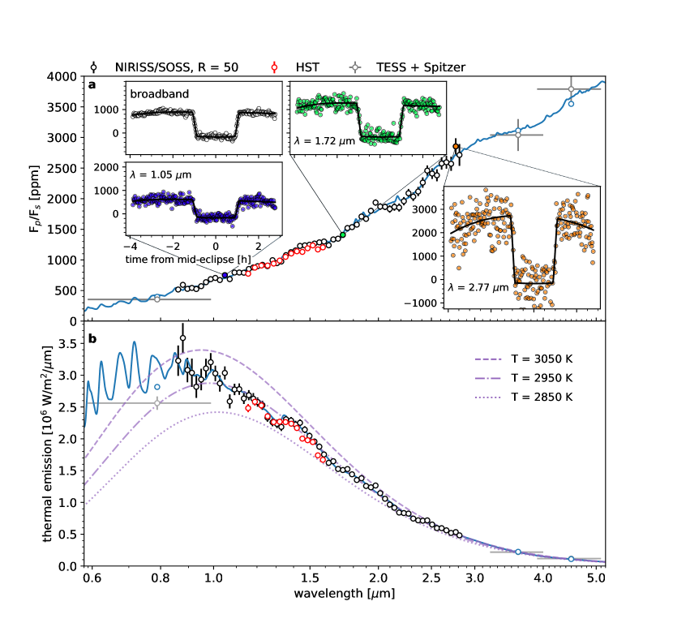
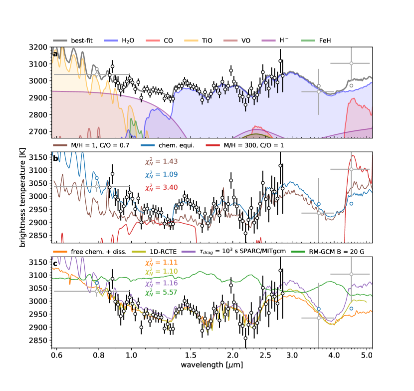
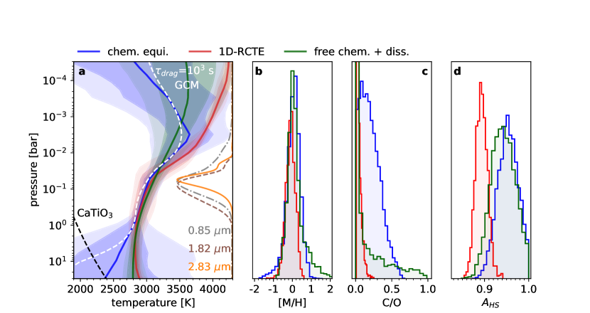
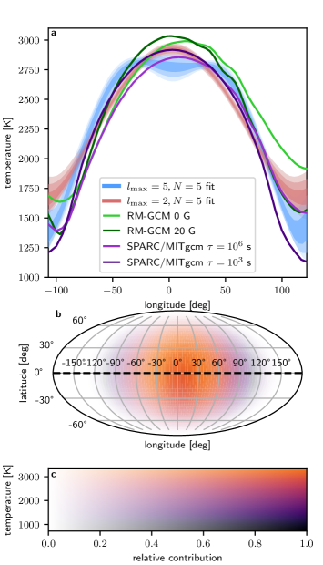
البيانات الموسعة
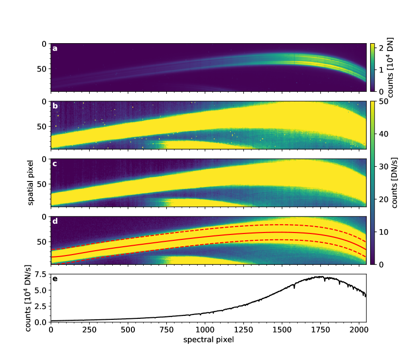
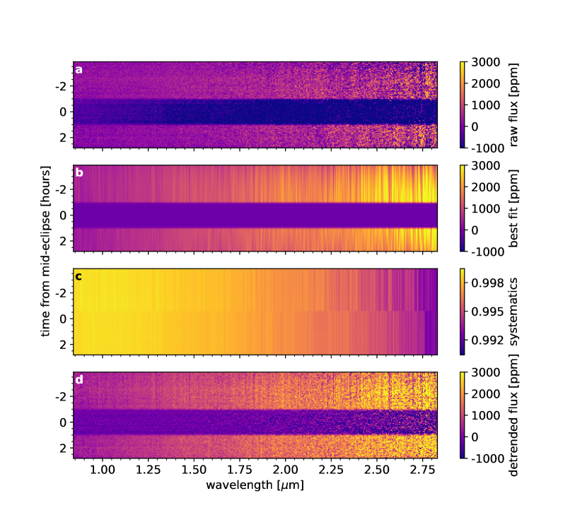
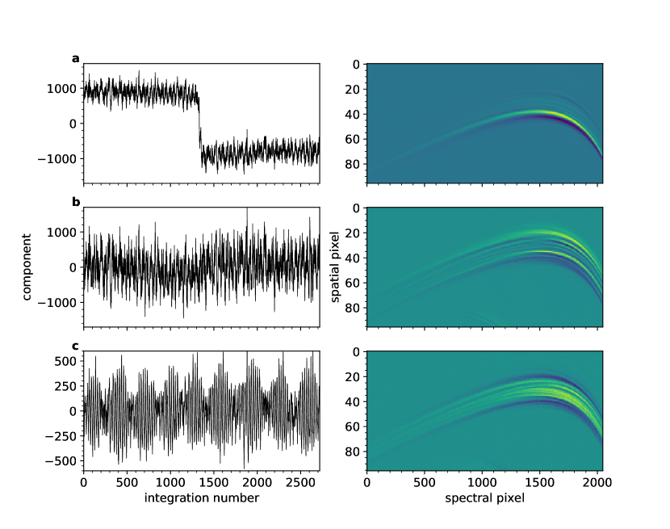
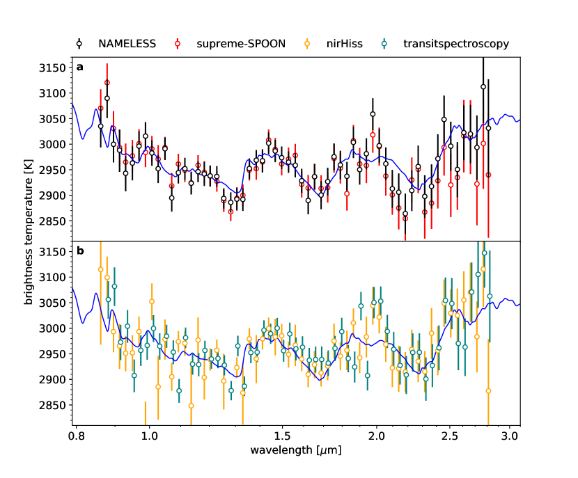
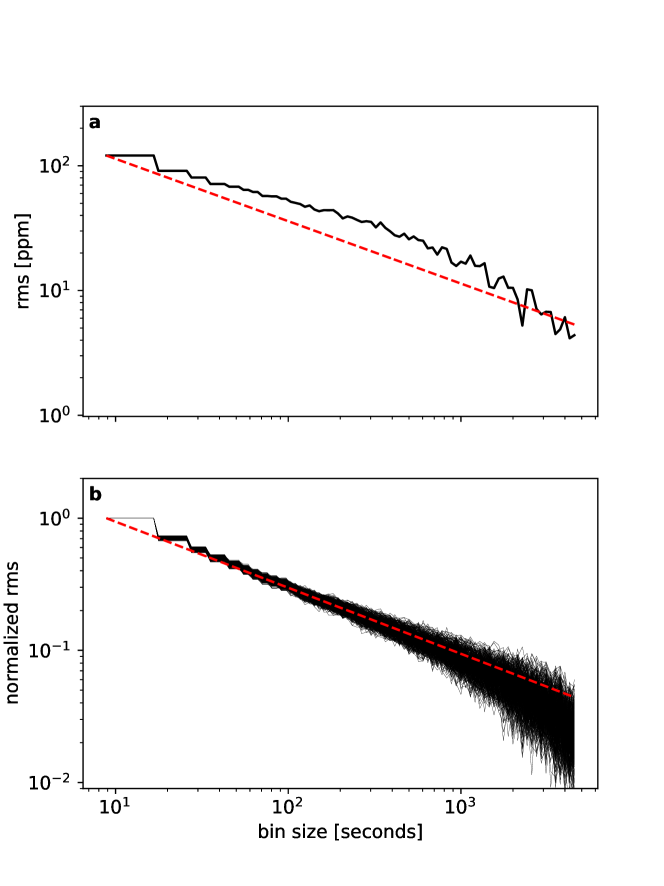
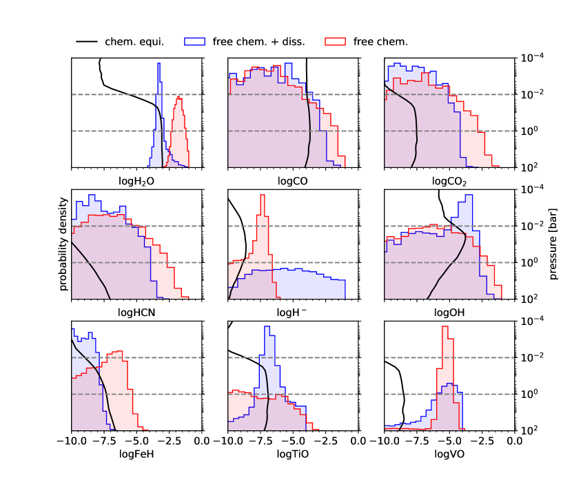
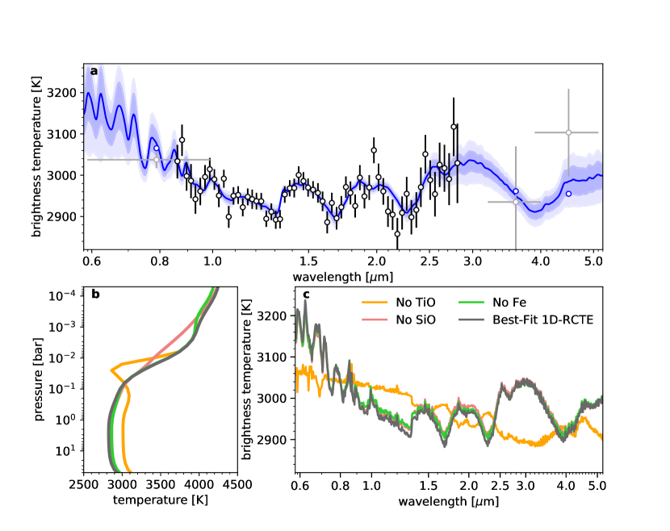
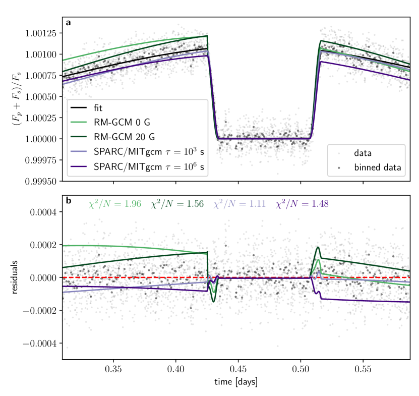
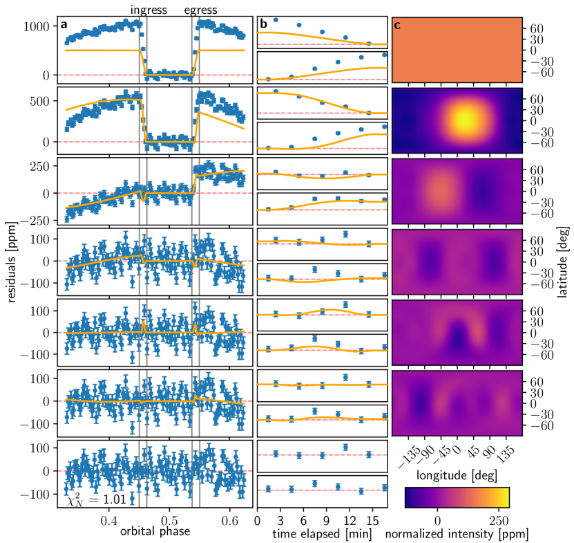
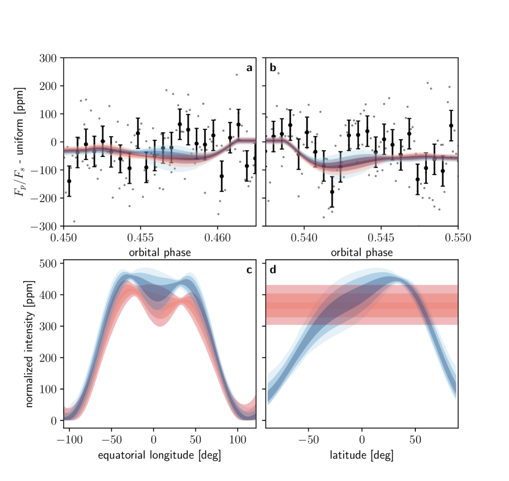
| Retrieval | M/H [times solar] | C/O | A | H2O | CO |
| SCARLET | – | – | |||
| ScCHIMERA | – | – | |||
| HyDRA | |||||
| POSEIDON |
| Parameter | Value |
|---|---|
| (days) | |
| (ppm) | |
| (ppm) | |
| (ppm) | |
| (ppm) | |
| Eclipse depth (ppm) | |
| Nightside flux (ppm) | |
| (deg) |
References
- Implementation of an Atmosphere-Ocean General Circulation Model on the Expanded Spherical Cube. Monthly Weather Review 132 (12), pp. 2845–2863. Note: _eprint: http://dx.doi.org/10.1175/MWR2823.1 External Links: Link, Document Cited by: §0.18.
- A New Look at the Statistical Model Identification. IEEE Transactions on Automatic Control 19, pp. 716–723. Cited by: §0.7.
- Early Release Science of the Exoplanet WASP-39b with JWST NIRSpec G395H. Nature. External Links: Document, ISSN 1476-4687, Link Cited by: §0.2, طيف انبعاث حراري عريض النطاق للمشتري فائق الحرارة WASP-18b.
- Treatment of overlapping gaseous absorption with the correlated-k method in hot Jupiter and brown dwarf atmosphere models. A&A 598, pp. A97. External Links: Document, 1610.01389 Cited by: §0.14.
- H- Opacity and Water Dissociation in the Dayside Atmosphere of the Very Hot Gas Giant WASP-18b. The Astrophysical Journal 855, pp. L30. Note: ADS Bibcode: 2018ApJ…855L..30A External Links: ISSN 0004-637X, Link, Document Cited by: طيف انبعاث حراري عريض النطاق للمشتري فائق الحرارة WASP-18b, Figure 1, Figure 2, §0.14.
- Climate of an ultra hot Jupiter: Spectroscopic phase curve of WASP-18b with HST/WFC3. Astronomy & Astrophysics 625, pp. A136. External Links: ISSN 0004-6361, 1432-0746, Link, Document Cited by: §0.14, §0.18, §0.7, §0.8, طيف انبعاث حراري عريض النطاق للمشتري فائق الحرارة WASP-18b.
- ExoMol line lists – III. an improved hot rotation-vibration line list for HCN and HNC. Monthly Notices of the Royal Astronomical Society 437 (2), pp. 1828–1835. External Links: Document, Link Cited by: §0.15.
- ExoMol line lists - III. An improved hot rotation-vibration line list for HCN and HNC. MNRAS 437 (2), pp. 1828–1835. External Links: Document, 1311.1328 Cited by: §0.16.
- MAGNETICALLY CONTROLLED CIRCULATION ON HOT EXTRASOLAR PLANETS. The Astrophysical Journal 776 (1), pp. 53 (en). Note: Publisher: American Astronomical Society External Links: ISSN 0004-637X, Link, Document Cited by: طيف انبعاث حراري عريض النطاق للمشتري فائق الحرارة WASP-18b.
- A transition between the hot and the ultra-hot Jupiter atmospheres. A&A 639, pp. A36. External Links: Document, 2007.15287 Cited by: طيف انبعاث حراري عريض النطاق للمشتري فائق الحرارة WASP-18b.
- The Transiting Exoplanet Community Early Release Science Program for JWST. Publications of the Astronomical Society of the Pacific 130 (993), pp. 114402 (en). Note: Publisher: IOP Publishing External Links: ISSN 1538-3873, Link, Document Cited by: طيف انبعاث حراري عريض النطاق للمشتري فائق الحرارة WASP-18b.
- The Chemical Homogeneity of Sun-like Stars in the Solar Neighborhood. ApJ 865 (1), pp. 68 (en). Note: Publisher: The American Astronomical Society External Links: ISSN 0004-637X, Link, Document Cited by: طيف انبعاث حراري عريض النطاق للمشتري فائق الحرارة WASP-18b.
- Free-free absorption coefficient of the negative hydrogen ion. Journal of Physics B Atomic Molecular Physics 20 (4), pp. 801–806. External Links: Document Cited by: §0.15, §0.16.
- Eureka!: An End-to-End Pipeline for JWST Time-Series Observations. arXiv. Note: arXiv:2207.03585 [astro-ph]Comment: 5 pages, 1 figure, submitted to JOSS External Links: Link, Document Cited by: §0.3.
- Magnetic Drag and 3-D Effects in Theoretical High-Resolution Emission Spectra of Ultrahot Jupiters: the Case of WASP-76b. arXiv. Note: arXiv:2204.12996 [astro-ph]Comment: 15 pages, 9 figures (including one animated figure), Submitted to AAS Journals; Link to animated figure: https://www.youtube.com/watch?v=KnghwJdZxHE External Links: Link, Document Cited by: Figure 4, §0.18.
- Exploring the Effects of Active Magnetic Drag in a General Circulation Model of the Ultrahot Jupiter WASP-76b. The Astronomical Journal 163 (1), pp. 35 (en). Note: Publisher: American Astronomical Society External Links: ISSN 1538-3881, Link, Document Cited by: §0.18, طيف انبعاث حراري عريض النطاق للمشتري فائق الحرارة WASP-18b.
- Atmospheric Retrieval for Super-Earths: Uniquely Constraining the Atmospheric Composition with Transmission Spectroscopy. The Astrophysical Journal 753, pp. 100. Note: ADS Bibcode: 2012ApJ…753..100B External Links: ISSN 0004-637X, Link, Document Cited by: §0.15.
- HOW TO DISTINGUISH BETWEEN CLOUDY MINI-NEPTUNES AND WATER/VOLATILE-DOMINATED SUPER-EARTHS. The Astrophysical Journal 778 (2), pp. 153 (en). Note: Publisher: American Astronomical Society External Links: ISSN 0004-637X, Link, Document Cited by: §0.15, §0.16.
- Water Vapor and Clouds on the Habitable-zone Sub-Neptune Exoplanet K2-18b. The Astrophysical Journal Letters 887 (1), pp. L14 (en). Note: Publisher: American Astronomical Society External Links: ISSN 2041-8205, Link, Document Cited by: §0.10, §0.15, طيف انبعاث حراري عريض النطاق للمشتري فائق الحرارة WASP-18b.
- Strict Upper Limits on the Carbon-to-Oxygen Ratios of Eight Hot Jupiters from Self-Consistent Atmospheric Retrieval. arXiv. Note: Number: arXiv:1504.07655 arXiv:1504.07655 [astro-ph]Comment: under review at ApJ; updated to account for recently announced observations of WASP-12b and HD 209458b External Links: Link, Document Cited by: §0.15.
- Constraints on TESS albedos for five hot Jupiters. Monthly Notices of the Royal Astronomical Society 513 (3), pp. 3444–3457. External Links: ISSN 0035-8711, Link, Document Cited by: §0.7.
- The GAPS programme with HARPS-n at TNG. Astronomy & Astrophysics 602, pp. A107. External Links: Document, Link Cited by: §0.12.
- Giant planet formation by gravitational instability.. Science 276, pp. 1836–1839. External Links: Document Cited by: طيف انبعاث حراري عريض النطاق للمشتري فائق الحرارة WASP-18b.
- The roasting marshmallows program with igrins on gemini south i: composition and climate of the ultra hot jupiter wasp-18 b. arXiv. External Links: Document, Link Cited by: طيف انبعاث حراري عريض النطاق للمشتري فائق الحرارة WASP-18b.
- Line strengths of rovibrational and rotational transitions in the X2 ground state of OH. Journal of Quantitative Spectroscopy and Radiative Transfer 168, pp. 142–157. External Links: Document Cited by: §0.16.
- X-ray spectral modelling of the AGN obscuring region in the CDFS: Bayesian model selection and catalogue. Astronomy and Astrophysics 564, pp. A125. External Links: Document, 1402.0004 Cited by: §0.14, §0.16, §0.16.
- Calculations of the Far-Wing Line Profiles of Sodium and Potassium in the Atmospheres of Substellar-Mass Objects. ApJ 583, pp. 985–995. External Links: astro-ph/0210086, Document Cited by: §0.16.
- Chemical Equilibrium Abundances in Brown Dwarf and Extrasolar Giant Planet Atmospheres. ApJ 512 (2), pp. 843–863. External Links: Document, astro-ph/9807055 Cited by: §0.16.
- Calculations of the far-wing line profiles of sodium and potassium in the atmospheres of substellar-mass objects. The Astrophysical Journal 583 (2), pp. 985–995. External Links: Document, Link Cited by: §0.15.
- Near-infrared Emission Spectrum of WASP-103b Using Hubble Space Telescope/Wide Field Camera 3. The Astronomical Journal 153, pp. 34. Note: ADS Bibcode: 2017AJ….153…34C External Links: ISSN 0004-6256, Link, Document Cited by: طيف انبعاث حراري عريض النطاق للمشتري فائق الحرارة WASP-18b.
- ThERESA: Three-dimensional Eclipse Mapping with Application to Synthetic JWST Data. The Astronomical Journal 163 (3), pp. 117 (en). Note: Publisher: American Astronomical Society External Links: ISSN 1538-3881, Link, Document Cited by: §0.12, §0.12, طيف انبعاث حراري عريض النطاق للمشتري فائق الحرارة WASP-18b, طيف انبعاث حراري عريض النطاق للمشتري فائق الحرارة WASP-18b.
- Five Key Exoplanet Questions Answered via the Analysis of 25 Hot-Jupiter Atmospheres in Eclipse. ApJS 260 (1), pp. 3. External Links: Document, 2204.11729 Cited by: طيف انبعاث حراري عريض النطاق للمشتري فائق الحرارة WASP-18b.
- ExoMol molecular line lists – XXXV. a rotation-vibration line list for hot ammonia. Monthly Notices of the Royal Astronomical Society 490 (4), pp. 4638–4647. External Links: Document, Link Cited by: §0.15.
- TraMoS - V. Updated ephemeris and multi-epoch monitoring of the hot Jupiters WASP-18Ab, WASP-19b, and WASP-77Ab. Astronomy & Astrophysics 636, pp. A98 (en). Note: Publisher: EDP Sciences External Links: ISSN 0004-6361, 1432-0746, Link, Document Cited by: §0.13, طيف انبعاث حراري عريض النطاق للمشتري فائق الحرارة WASP-18b, طيف انبعاث حراري عريض النطاق للمشتري فائق الحرارة WASP-18b.
- Inverting Phase Functions to Map Exoplanets. The Astrophysical Journal 678, pp. L129. Note: ADS Bibcode: 2008ApJ…678L.129C External Links: ISSN 0004-637X, Link, Document Cited by: §0.7.
- Astropy/ccdproc: v1.3.0.post1. External Links: Document, Link Cited by: §0.3.
- ATOCA: an Algorithm to Treat Order Contamination. Application to the NIRISS SOSS Mode. PASP 134 (1039), pp. 094502. External Links: Document, 2207.05199 Cited by: §0.4.
- The JWST Fine Guidance Sensor (FGS) and Near-Infrared Imager and Slitless Spectrograph (NIRISS). In Space Telescopes and Instrumentation 2012: Optical, Infrared, and Millimeter Wave, Vol. 8442, pp. 1005–1017. External Links: Link, Document Cited by: طيف انبعاث حراري عريض النطاق للمشتري فائق الحرارة WASP-18b, طيف انبعاث حراري عريض النطاق للمشتري فائق الحرارة WASP-18b.
- Line Intensities and Molecular Opacities of the FeH F 4i-X 4i Transition. ApJ 594 (1), pp. 651–663. External Links: Document, astro-ph/0305162 Cited by: §0.16.
- An ultrahot gas-giant exoplanet with a stratosphere. Nature 548 (7665), pp. 58–61. External Links: Document, 1708.01076 Cited by: §0.16.
- An ultrahot gas-giant exoplanet with a stratosphere. Nature 548 (7665), pp. 58–61. External Links: Document, 1708.01076 Cited by: طيف انبعاث حراري عريض النطاق للمشتري فائق الحرارة WASP-18b.
- Early Release Science of the exoplanet WASP-39b with JWST NIRISS. Nature. External Links: Document, ISSN 1476-4687, Link Cited by: §0.1, §0.2, §0.3, §0.4, §0.5, §0.9.
- MULTINEST: an efficient and robust Bayesian inference tool for cosmology and particle physics. MNRAS 398, pp. 1601–1614. External Links: 0809.3437, Document Cited by: §0.16, §0.16.
- Variability Catalog of Stars Observed During the TESS Prime Mission. arXiv e-prints, pp. arXiv:2208.11721. External Links: 2208.11721 Cited by: §0.8.
- Emcee : The MCMC Hammer. Publications of the Astronomical Society of the Pacific 125 (925), pp. 306–312 (en). External Links: ISSN 00046280, 15383873, Link, Document Cited by: §0.10, §0.15.
- Exploring a Photospheric Radius Correction to Model Secondary Eclipse Spectra for Transiting Exoplanets. ApJL 880 (1), pp. L16. External Links: Document, 1904.00025 Cited by: §0.16.
- Gaseous Mean Opacities for Giant Planet and Ultracool Dwarf Atmospheres over a Range of Metallicities and Temperatures. \apjs 214, pp. 25. Note: _eprint: 1409.0026 External Links: Document Cited by: §0.18.
- genesis: new self-consistent models of exoplanetary spectra. MNRAS 472, pp. 2334–2355. External Links: 1706.02302, Document Cited by: §0.16.
- Retrieval of exoplanet emission spectra with HyDRA. MNRAS 474, pp. 271–288. External Links: 1710.06433, Document Cited by: §0.16, طيف انبعاث حراري عريض النطاق للمشتري فائق الحرارة WASP-18b.
- H- and Dissociation in Ultra-hot Jupiters: A Retrieval Case Study of WASP-18b. The Astronomical Journal 159, pp. 232. Note: ADS Bibcode: 2020AJ….159..232G External Links: ISSN 0004-6256, Link, Document Cited by: §0.16, §0.16, §0.16, طيف انبعاث حراري عريض النطاق للمشتري فائق الحرارة WASP-18b.
- H- and Dissociation in Ultra-hot Jupiters: A Retrieval Case Study of WASP-18b. AJ 159 (5), pp. 232. External Links: Document, 2004.07252 Cited by: طيف انبعاث حراري عريض النطاق للمشتري فائق الحرارة WASP-18b.
- Inference from Iterative Simulation Using Multiple Sequences. Statistical Science 7, pp. 457–472. External Links: Document Cited by: §0.12.
- Atmospheric Characterization of Hot Jupiter CoRoT-1 b Using the Wide Field Camera 3 on the Hubble Space Telescope. AJ 164 (1), pp. 19. External Links: Document, 2206.03517 Cited by: §0.14.
- Computer program for calculation of complex chemical equilibrium compositions and applications. part 1: analysis. Technical report Technical Report 19950013764, NASA Lewis Research Center. Cited by: §0.14.
- HELIOS-k: an ultrafast, open-source opacity calculator for radiative transfer. The Astrophysical Journal 808 (2), pp. 182. Cited by: §0.17.
- HELIOS-k 2.0 opacity calculator and open-source opacity database for exoplanetary atmospheres. The Astrophysical Journal Supplement Series 253 (1), pp. 30. Cited by: §0.17.
- Giant Planets from the Inside-Out. Technical report Note: Publication Title: arXiv e-prints ADS Bibcode: 2022arXiv220504100G Type: article External Links: Link Cited by: طيف انبعاث حراري عريض النطاق للمشتري فائق الحرارة WASP-18b.
- Exoplanet Orbit Database. II. Updates to Exoplanets.org. Publications of the Astronomical Society of the Pacific 126, pp. 827. Note: ADS Bibcode: 2014PASP..126..827H External Links: ISSN 0004-6280, Link, Document Cited by: §0.8.
- Improved HCN/HNC linelist, model atmospheres and synthetic spectra for WZ Cas. MNRAS 367 (1), pp. 400–406. External Links: Document, astro-ph/0512363 Cited by: §0.16.
- An orbital period of 0.94days for the hot-Jupiter planet WASP-18b. Nature 460, pp. 1098–1100. Note: ADS Bibcode: 2009Natur.460.1098H External Links: ISSN 0028-0836, Link, Document Cited by: طيف انبعاث حراري عريض النطاق للمشتري فائق الحرارة WASP-18b, طيف انبعاث حراري عريض النطاق للمشتري فائق الحرارة WASP-18b.
- Shallow-water Magnetohydrodynamics for Westward Hotspots on Hot Jupiters. The Astrophysical Journal 872 (2), pp. L27 (en). Note: Publisher: American Astronomical Society External Links: ISSN 2041-8205, Link, Document Cited by: طيف انبعاث حراري عريض النطاق للمشتري فائق الحرارة WASP-18b.
- Observational Consequences of Shallow-water Magnetohydrodynamics on Hot Jupiters. The Astrophysical Journal Letters 916 (1), pp. L8 (en). Note: Publisher: American Astronomical Society External Links: ISSN 2041-8205, Link, Document Cited by: طيف انبعاث حراري عريض النطاق للمشتري فائق الحرارة WASP-18b.
- An optimal extraction algorithm for CCD spectroscopy.. PASP 98, pp. 609–617. External Links: Document Cited by: §0.3.
- Time-dependent radiative transfer with PHOENIX. Astronomy & Astrophysics 502 (3), pp. 1043–1049 (en). Note: Number: 3 Publisher: EDP Sciences External Links: ISSN 0004-6361, 1432-0746, Link, Document Cited by: §0.13, طيف انبعاث حراري عريض النطاق للمشتري فائق الحرارة WASP-18b.
- Continuous absorption by the negative hydrogen ion reconsidered. A&A 193 (1-2), pp. 189–192. Cited by: §0.15, §0.16, §0.16.
- Update of the HITRAN collision-induced absorption section. \icarus 328, pp. 160–175. External Links: Document Cited by: §0.16.
- Atmospheric Circulation of Hot Jupiters: Dayside-Nightside Temperature Differences. II. Comparison with Observations. The Astrophysical Journal 835, pp. 198. Note: ADS Bibcode: 2017ApJ…835..198K External Links: ISSN 0004-637X, Link, Document Cited by: طيف انبعاث حراري عريض النطاق للمشتري فائق الحرارة WASP-18b.
- Atmospheric Circulation of Hot Jupiters: Dayside-Nightside Temperature Differences. ApJ 821 (1), pp. 16. External Links: Document, 1601.00069 Cited by: طيف انبعاث حراري عريض النطاق للمشتري فائق الحرارة WASP-18b.
- A PRECISE WATER ABUNDANCE MEASUREMENT FOR THE HOT JUPITER WASP-43b. The Astrophysical Journal 793 (2), pp. L27. External Links: Document, Link Cited by: طيف انبعاث حراري عريض النطاق للمشتري فائق الحرارة WASP-18b.
- Global Climate and Atmospheric Composition of the Ultra-hot Jupiter WASP-103b from HST and Spitzer Phase Curve Observations. The Astronomical Journal 156, pp. 17. Note: ADS Bibcode: 2018AJ….156…17K External Links: ISSN 0004-6256, Link, Document Cited by: طيف انبعاث حراري عريض النطاق للمشتري فائق الحرارة WASP-18b.
- Batman : BAsic Transit Model cAlculatioN in Python. Publications of the Astronomical Society of the Pacific 127 (957), pp. 1161–1165 (en). External Links: ISSN 00046280, 15383873, Link, Document Cited by: §0.7.
- Model atmospheres for g, f, a, b, and o stars. The Astrophysical Journal Supplement Series 40, pp. 1–340. Cited by: §0.17.
- Distorted, nonspherical transiting planets: impact on the transit depth and on the radius determination. Astronomy & Astrophysics 528, pp. A41 (en). Note: Publisher: EDP Sciences External Links: ISSN 0004-6361, 1432-0746, Link, Document Cited by: §0.7.
- Simulating gas giant exoplanet atmospheres with EXO-FMS: comparing semigrey, picket fence, and correlated-k radiative-transfer schemes. MNRAS 506 (2), pp. 2695–2711. External Links: Document, 2106.11664 Cited by: §0.18.
- Atmospheric circulation of eccentric hot neptune gj436b. The Astrophysical Journal 720 (1), pp. 344. Cited by: §0.17.
- Rovibrational Line Lists for Nine Isotopologues of the CO Molecule in the X 1+ Ground Electronic State. The Astrophysical Journal Supplement Series 216, pp. 15. External Links: Document Cited by: §0.16.
- Atmospheric Chemistry in Giant Planets, Brown Dwarfs, and Low-Mass Dwarf Stars. I. Carbon, Nitrogen, and Oxygen. ıcarus 155, pp. 393–424. External Links: Document Cited by: §0.18.
- Solar System Elemental Abundances in 2009. Meteoritics and Planetary Science Supplement 72, pp. 5154. Cited by: §0.14.
- The planetary scientist’s companion / Katharina Lodders, Bruce Fegley.. Cited by: طيف انبعاث حراري عريض النطاق للمشتري فائق الحرارة WASP-18b.
- Extremely Irradiated Hot Jupiters: Non-oxide Inversions, H- Opacity, and Thermal Dissociation of Molecules. The Astrophysical Journal 866, pp. 27. Note: ADS Bibcode: 2018ApJ…866…27L External Links: ISSN 0004-637X, Link, Document Cited by: طيف انبعاث حراري عريض النطاق للمشتري فائق الحرارة WASP-18b, طيف انبعاث حراري عريض النطاق للمشتري فائق الحرارة WASP-18b.
- SPIDERMAN: an open-source code to model phase curves and secondary eclipses. Monthly Notices of the Royal Astronomical Society 477 (2), pp. 2613–2627. External Links: ISSN 0035-8711, Link, Document Cited by: §0.12.
- Starry: Analytic Occultation Light Curves. The Astronomical Journal 157, pp. 64. Note: ADS Bibcode: 2019AJ….157…64L External Links: ISSN 0004-6256, Link, Document Cited by: §0.12.
- Mapping Stellar Surfaces. I. Degeneracies in the Rotational Light-curve Problem. AJ 162 (3), pp. 123. External Links: Document, 2102.00007 Cited by: §0.12.
- TRIDENT: A Rapid 3D Radiative-transfer Model for Exoplanet Transmission Spectra. ApJ 929 (1), pp. 20. External Links: Document, 2111.05862 Cited by: §0.16.
- HD 209458b in new light: evidence of nitrogen chemistry, patchy clouds and sub-solar water. MNRAS 469 (2), pp. 1979–1996. External Links: Document, 1701.01113 Cited by: §0.16, §0.16.
- POSEIDON: A Multidimensional Atmospheric Retrieval Code for Exoplanet Spectra. Journal of Open Source Software 8 (81), pp. 4873. External Links: Document Cited by: §0.16.
- A Temperature and Abundance Retrieval Method for Exoplanet Atmospheres. ApJ 707, pp. 24–39. External Links: 0910.1347, Document Cited by: §0.16, §0.16.
- Toward Chemical Constraints on Hot Jupiter Migration. ApJL 794 (1), pp. L12. External Links: Document, 1408.3668 Cited by: طيف انبعاث حراري عريض النطاق للمشتري فائق الحرارة WASP-18b.
- Carbon-rich Giant Planets: Atmospheric Chemistry, Thermal Inversions, Spectra, and Formation Conditions. ApJ 743 (2), pp. 191. External Links: Document, 1109.3183 Cited by: §0.16.
- HELIOS: An Open-source, GPU-accelerated Radiative Transfer Code for Self-consistent Exoplanetary Atmospheres. AJ 153 (2), pp. 56. External Links: Document, 1606.05474 Cited by: §0.17.
- Self-luminous and Irradiated Exoplanetary Atmospheres Explored with HELIOS. AJ 157 (5), pp. 170. External Links: Document, 1903.06794 Cited by: §0.17.
- A direct comparison between the use of double gray and multiwavelength radiative transfer in a general circulation model with and without radiatively active clouds. arXiv. External Links: Link, Document Cited by: §0.18.
- A unique hot Jupiter spectral sequence with evidence for compositional diversity. Nature Astronomy 5, pp. 1224–1232. Note: ADS Bibcode: 2021NatAs…5.1224M External Links: ISSN 2397-3366, Link, Document Cited by: طيف انبعاث حراري عريض النطاق للمشتري فائق الحرارة WASP-18b, §0.14.
- Eigenspectra: a framework for identifying spectra from 3D eclipse mapping. Monthly Notices of the Royal Astronomical Society 499 (4), pp. 5151–5162. External Links: ISSN 0035-8711, Link, Document Cited by: §0.12, §0.12, طيف انبعاث حراري عريض النطاق للمشتري فائق الحرارة WASP-18b, طيف انبعاث حراري عريض النطاق للمشتري فائق الحرارة WASP-18b.
- Thermal Structure of Uranus’ Atmosphere. ıcarus 138, pp. 268–286. External Links: Document Cited by: §0.18.
- Spitzer 3.6 and 4.5 m full-orbit light curves of WASP-18. MNRAS 428 (3), pp. 2645–2660. External Links: Document, 1210.5585 Cited by: Figure 1.
- The thermal structure of Titan’s atmosphere. \icarus 80 (1), pp. 23–53. External Links: Document Cited by: §0.14.
- ExoMol Molecular linelists - XXXIII. The spectrum of Titanium Oxide. MNRAS 488, pp. 2836–2854. External Links: 1905.04587, Document Cited by: §0.15, §0.16, §0.16.
- ExoMol line lists - XVIII. The high-temperature spectrum of VO. MNRAS 463 (1), pp. 771–793. External Links: Document, 1609.06120 Cited by: §0.15, §0.16, §0.16.
- Magnetic scaling laws for the atmospheres of hot giant exoplanets. The Astrophysical Journal 745, pp. 138. External Links: Document Cited by: طيف انبعاث حراري عريض النطاق للمشتري فائق الحرارة WASP-18b.
- Confirmation of water emission in the dayside spectrum of the ultrahot Jupiter WASP-121b. MNRAS 496 (2), pp. 1638–1644. External Links: Document, 2005.09631 Cited by: طيف انبعاث حراري عريض النطاق للمشتري فائق الحرارة WASP-18b.
- ON THE DETECTABILITY OF STAR-PLANET INTERACTION. The Astrophysical Journal 754 (2), pp. 137 (en). Note: Publisher: American Astronomical Society External Links: ISSN 0004-637X, Link, Document Cited by: §0.8.
- THE EFFECTS OF SNOWLINES ON c/o IN PLANETARY ATMOSPHERES. The Astrophysical Journal 743 (1), pp. L16. External Links: Document, Link Cited by: طيف انبعاث حراري عريض النطاق للمشتري فائق الحرارة WASP-18b.
- From thermal dissociation to condensation in the atmospheres of ultra hot Jupiters: WASP-121b in context. Astronomy & Astrophysics 617, pp. A110. External Links: ISSN 0004-6361, 1432-0746, Link, Document Cited by: طيف انبعاث حراري عريض النطاق للمشتري فائق الحرارة WASP-18b, §0.16, §0.18, طيف انبعاث حراري عريض النطاق للمشتري فائق الحرارة WASP-18b.
- 3D mixing in hot jupiters atmospheres-i. application to the day/night cold trap in hd 209458b. Astronomy & Astrophysics 558, pp. A91. Cited by: §0.17.
- Scikit-learn: machine learning in Python. Journal of Machine Learning Research 12, pp. 2825–2830. Cited by: §0.9.
- Where Is the Water? Jupiter-like C/H Ratio but Strong H2O Depletion Found on $\uptau$ Boötis b Using SPIRou. The Astronomical Journal 162 (2), pp. 73 (en). Note: Publisher: American Astronomical Society External Links: ISSN 1538-3881, Link, Document Cited by: §0.15.
- MAGNETIC DRAG ON HOT JUPITER ATMOSPHERIC WINDS. The Astrophysical Journal 719 (2), pp. 1421–1426 (en). Note: Publisher: American Astronomical Society External Links: ISSN 0004-637X, Link, Document Cited by: §0.18, طيف انبعاث حراري عريض النطاق للمشتري فائق الحرارة WASP-18b.
- HyDRo: atmospheric retrieval of rocky exoplanets in thermal emission. MNRAS 511 (2), pp. 2565–2584. External Links: Document, 2112.05059 Cited by: §0.16.
- Assessing spectra and thermal inversions due to TiO in hot Jupiter atmospheres. MNRAS 496 (3), pp. 3870–3886. External Links: Document, 2006.04807 Cited by: §0.16.
- Considerations for atmospheric retrieval of high-precision brown dwarf spectra. MNRAS 497 (4), pp. 5136–5154. External Links: Document, 2007.15004 Cited by: §0.16, طيف انبعاث حراري عريض النطاق للمشتري فائق الحرارة WASP-18b.
- No X-rays from WASP-18 - Implications for its age, activity, and the influence of its massive hot Jupiter. Astronomy & Astrophysics 567, pp. A128 (en). Note: Publisher: EDP Sciences External Links: ISSN 0004-6361, 1432-0746, Link, Document Cited by: §0.8.
- Ground- and Space-based Detection of the Thermal Emission Spectrum of the Transiting Hot Jupiter KELT-2Ab. AJ 156 (3), pp. 133. External Links: Document, 1809.05615 Cited by: §0.14.
- VALD: The Vienna Atomic Line Data Base.. A&AS 112, pp. 525. Cited by: §0.15.
- Chemical abundances for 25 jwst exoplanet host stars with keckspec. arXiv. External Links: Document, Link Cited by: طيف انبعاث حراري عريض النطاق للمشتري فائق الحرارة WASP-18b.
- Formation of the Giant Planets by Concurrent Accretion of Solids and Gas. \icarus 124 (1), pp. 62–85. External Links: Document Cited by: طيف انبعاث حراري عريض النطاق للمشتري فائق الحرارة WASP-18b.
- ExoMol molecular line lists XXX: a complete high-accuracy line list for water. MNRAS 480 (2), pp. 2597–2608. External Links: Document, 1807.04529 Cited by: §0.15, §0.16.
- APPLESOSS: A Producer of ProfiLEs for SOSS. Application to the NIRISS SOSS Mode. PASP 134 (1040), pp. 104502. External Links: Document, 2207.05136 Cited by: §0.4.
- Bayesian Model Selection in Social Research. Sociological Methodology 25, pp. 111–163. Note: Publisher: [American Sociological Association, Wiley, Sage Publications, Inc.] External Links: ISSN 0081-1750, Link, Document Cited by: §0.7.
- THREE-dimensional atmospheric circulation models of hd 189733b and hd 209458b with consistent magnetic drag and ohmic dissipation. The Astrophysical Journal 764 (1), pp. 103. External Links: Document Cited by: §0.18.
- A More Informative Map: Inverting Thermal Orbital Phase and Eclipse Light Curves of Exoplanets. The Astronomical Journal 156 (5), pp. 235 (en). Note: Publisher: American Astronomical Society External Links: ISSN 1538-3881, Link, Document Cited by: §0.12, §0.12, §0.12, طيف انبعاث حراري عريض النطاق للمشتري فائق الحرارة WASP-18b.
- New section of the hitran database: collision-induced absorption (cia). Journal of Quantitative Spectroscopy and Radiative Transfer 113 (11), pp. 1276 – 1285. Note: Three Leaders in Spectroscopy External Links: ISSN 0022-4073, Document, Link Cited by: §0.16.
- Characterization of JWST science performance from commissioning. arXiv e-prints, pp. arXiv:2207.05632. External Links: 2207.05632 Cited by: §0.2, طيف انبعاث حراري عريض النطاق للمشتري فائق الحرارة WASP-18b.
- EXPLORING BIASES OF ATMOSPHERIC RETRIEVALS IN SIMULATED $\less$i$\greater$JWST$\less$/i$\greater$ TRANSMISSION SPECTRA OF HOT JUPITERS. The Astrophysical Journal 833 (1), pp. 120 (en). Note: Publisher: American Astronomical Society External Links: ISSN 0004-637X, Link, Document Cited by: §0.15.
- Constraints on the magnetic field strength of HAT-P-7b and other hot giant exoplanets. Nature Astronomy 1, pp. 131. External Links: Document Cited by: طيف انبعاث حراري عريض النطاق للمشتري فائق الحرارة WASP-18b.
- HITEMP, the high-temperature molecular spectroscopic database. J. Quant. Spec. Radiat. Transf. 111, pp. 2139–2150. External Links: Document Cited by: §0.15, §0.16.
- Spectral Fingerprints of Earth-like Planets Around FGK Stars. Astrobiology 13 (3), pp. 251–269. External Links: Document, 1212.2638 Cited by: §0.17.
- A major upgrade of the VALD database. Physica Scripta 90 (5), pp. 054005. External Links: Document Cited by: §0.16.
- Evidence for a Dayside Thermal Inversion and High Metallicity for the Hot Jupiter WASP-18b. ApJL 850 (2), pp. L32. External Links: Document, 1711.10491 Cited by: طيف انبعاث حراري عريض النطاق للمشتري فائق الحرارة WASP-18b, Figure 2, طيف انبعاث حراري عريض النطاق للمشتري فائق الحرارة WASP-18b.
- Signatures of Star-planet interactions. pp. 1737–1753. Note: arXiv:1712.02814 [astro-ph]Comment: Accepted for publication in the handbook of exoplanets External Links: Link, Document Cited by: §0.8.
- Atmospheric Circulation of Hot Jupiters: Coupled Radiative-Dynamical General Circulation Model Simulations of HD 189733b and HD 209458b. \apj 699, pp. 564–584. Note: _eprint: 0809.2089 External Links: Document Cited by: Figure 4, §0.18.
- TESS Full Orbital Phase Curve of the WASP-18b System. The Astronomical Journal 157 (5), pp. 178. External Links: ISSN 1538-3881, Link, Document Cited by: §0.11, §0.11, §0.7.
- Nested sampling for general bayesian computation. Bayesian Anal. 1 (4), pp. 833–859. External Links: Document, Link Cited by: §0.16.
- Estimation of a length scale to use with the quench level approximation for obtaining chemical abundances. Icarus 132 (1), pp. 176–184. Cited by: §0.17.
- The Revised TESS Input Catalog and Candidate Target List. The Astronomical Journal 158, pp. 138. Note: ADS Bibcode: 2019AJ….158..138S External Links: ISSN 0004-6256, Link, Document Cited by: §0.13, طيف انبعاث حراري عريض النطاق للمشتري فائق الحرارة WASP-18b.
- FASTCHEM 2 : an improved computer program to determine the gas-phase chemical equilibrium composition for arbitrary element distributions. MNRAS 517 (3), pp. 4070–4080. External Links: Document, 2206.08247 Cited by: §0.15.
- CDSD-4000: High-resolution, high-temperature carbon dioxide spectroscopic databank. Journal of Quantitative Spectroscopy and Radiative Transfer 112, pp. 1403–1410. External Links: Document Cited by: §0.16.
- Understanding and mitigating biases when studying inhomogeneous emission spectra with JWST. MNRAS 493 (3), pp. 4342–4354. External Links: Document, 2002.00773 Cited by: Figure 3, §0.14, §0.15, §0.16, §0.16.
- Impact of variable photospheric radius on exoplanet atmospheric retrievals. MNRAS 513 (1), pp. L20–L24. External Links: Document, 2203.01839 Cited by: §0.16.
- Rapid calculation of radiative heating rates and photodissociation rates in inhomogeneous multiple scattering atmospheres. J. Geophys. Res. 94, pp. 16287–16301. External Links: Document Cited by: §0.14.
- Bayes in the sky: Bayesian inference and model selection in cosmology. Contemporary Physics 49 (2), pp. 71–104. External Links: Document, 0803.4089 Cited by: §0.16.
- VULCAN: An Open-source, Validated Chemical Kinetics Python Code for Exoplanetary Atmospheres. ApJS 228 (2), pp. 20. External Links: Document, 1607.00409 Cited by: §0.17.
- A comparative study of atmospheric chemistry with VULCAN. The Astrophysical Journal 923 (2), pp. 264. External Links: Document, Link Cited by: §0.17, §0.17.
- Scikit-image: image processing in Python. PeerJ 2, pp. e453. External Links: ISSN 2167-8359, Link, Document Cited by: §0.3.
- Cosmic-Ray Rejection by Laplacian Edge Detection. PASP 113 (789), pp. 1420–1427. External Links: Document, astro-ph/0108003 Cited by: §0.3.
- Atmospheric Chemistry in Giant Planets, Brown Dwarfs, and Low-Mass Dwarf Stars. II. Sulfur and Phosphorus. \apj 648, pp. 1181–1195. Note: _eprint: arXiv:astro-ph/0511136 External Links: Document Cited by: §0.18.
- High-temperature condensate clouds in super-hot Jupiter atmospheres. Monthly Notices of the Royal Astronomical Society 464 (4), pp. 4247–4254. Cited by: Figure 3.
- HAT-P-26b: A Neptune-mass exoplanet with a well-constrained heavy element abundance. Science 356 (6338), pp. 628–631. External Links: Document, 1705.04354 Cited by: طيف انبعاث حراري عريض النطاق للمشتري فائق الحرارة WASP-18b.
- Mass–metallicity trends in transiting exoplanets from atmospheric abundances of h2o, na, and k. The Astrophysical Journal Letters 887 (1), pp. L20. External Links: Document, Link Cited by: طيف انبعاث حراري عريض النطاق للمشتري فائق الحرارة WASP-18b.
- CRIRES spectroscopy and empirical line-by-line identification of FeH molecular absorption in an M dwarf. Astronomy and Astrophysics 523, pp. A58. External Links: Document, 1007.4116 Cited by: §0.15, §0.16.
- Transits and occultations. arXiv. External Links: Document, Link Cited by: §0.12.
- Systematic Phase Curve Study of Known Transiting Systems from Year One of the TESS Mission. AJ 160 (4), pp. 155. External Links: Document, 2003.06407 Cited by: §0.11, §0.11, §0.11.
- ExoMol line lists – IV. the rotation–vibration spectrum of methane up to 1500 k. Monthly Notices of the Royal Astronomical Society 440 (2), pp. 1649–1661. External Links: Document, Link Cited by: §0.15.
- Forward modeling and retrievals with PLATON, a fast open-source tool. Publications of the Astronomical Society of the Pacific 131 (997), pp. 034501. External Links: Document, Link Cited by: §0.17.